Until now, you have studied chemical processes in which atoms share or transfer electrons to form new compounds, leaving the atomic nuclei largely unaffected. In this chapter, we examine some properties of the atomic nucleus and the changes that can occur in atomic nuclei.
Nuclear reactions differ from other chemical processes in one critical way: in a nuclear reaction, the identities of the elements change. In addition, nuclear reactions are often accompanied by the release of enormous amounts of energy, as much as a billion times more than the energy released by chemical reactions. Moreover, the yields and rates of a nuclear reaction are generally unaffected by changes in temperature, pressure, or the presence of a catalyst.
We begin by examining the structure of the atomic nucleus and the factors that determine whether a particular nucleus is stable or decays spontaneously to another element. We then discuss the major kinds of nuclear decay reactions, as well as the properties and uses of the radiation emitted when nuclei decay. You will learn how radioactive emissions can be used to study the mechanisms of chemical reactions and biological processes and how to calculate the amount of energy released during a nuclear reaction. You will also discover why houses are tested for radon gas, how radiation is used to probe organs such as the brain, and how the energy from nuclear reactions can be harnessed to produce electricity. Last, we explore the nuclear chemistry that takes place in stars, and we describe the role that stars play in producing most of the elements in the universe.

The glow caused by intense radiation. The high-energy particles ejected into the surrounding water or air by an intense radioactive source such as this nuclear reactor core produce a ghostly bluish glow.
Although most of the known elements have at least one isotope whose atomic nucleus is stable indefinitely, all elements have isotopes that are unstable and disintegrate, or decay, at measurable rates by emitting radiation. Some elements have no stable isotopes and eventually decay to other elements. In contrast to the chemical reactions that were the main focus of earlier chapters and are due to changes in the arrangements of the valence electrons of atoms, the process of nuclear decay results in changes inside an atomic nucleus. We begin our discussion of nuclear reactions by reviewing the conventions used to describe the components of the nucleus.
As you learned in Chapter 1 "Introduction to Chemistry", each element can be represented by the notation where A, the mass number, is the sum of the number of protons and the number of neutrons, and Z, the atomic number, is the number of protons. The protons and neutrons that make up the nucleus of an atom are called nucleonsThe protons and neutrons that make up the nucleus of an atom., and an atom with a particular number of protons and neutrons is called a nuclideAn atom with a particular number of nucleons.. Nuclides with the same number of protons but different numbers of neutrons are called isotopes. Isotopes can also be represented by an alternative notation that uses the name of the element followed by the mass number, such as carbon-12. The stable isotopes of oxygen, for example, can be represented in any of the following ways:
Because the number of neutrons is equal to A − Z, we see that the first isotope of oxygen has 8 neutrons, the second isotope 9 neutrons, and the third isotope 10 neutrons. Isotopes of all naturally occurring elements on Earth are present in nearly fixed proportions, with each proportion constituting an isotope’s natural abundance. For example, in a typical terrestrial sample of oxygen, 99.76% of the O atoms is oxygen-16, 0.20% is oxygen-18, and 0.04% is oxygen-17.
Any nucleus that is unstable and decays spontaneously is said to be radioactiveAny nucleus that is unstable and decays spontaneously, emitting particles and electromagnetic radiation., emitting subatomic particles and electromagnetic radiation. The emissions are collectively called radioactivity and can be measured. Isotopes that emit radiation are called radioisotopesAn isotope that emits radiation.. As you learned in Chapter 14 "Chemical Kinetics", the rate at which radioactive decay occurs is characteristic of the isotope and is generally reported as a half-life (t1/2), the amount of time required for half of the initial number of nuclei present to decay in a first-order reaction. (For more information on half-life, see Chapter 14 "Chemical Kinetics", Section 14.5 "Half-Lives and Radioactive Decay Kinetics".) An isotope’s half-life can range from fractions of a second to billions of years and, among other applications, can be used to measure the age of ancient objects. Example 1 and its corresponding exercise review the calculations involving radioactive decay rates and half-lives.
Fort Rock Cave in Oregon is the site where archaeologists discovered several Indian sandals, the oldest ever found in Oregon. Analysis of the 14C content of the sagebrush used to make the sandals gave an average decay rate of 5.1 disintegrations per minute (dpm) per gram of carbon. The current 14C/12C ratio in living organisms is 1.3 × 10−12, with a decay rate of 15 dpm/g C. How long ago was the sagebrush in the sandals cut? The half-life of 14C is 5730 yr.
Given: radioisotope, current 14C/12C ratio, initial decay rate, final decay rate, and half-life
Asked for: age
Strategy:
A Use Equation 14.30 to calculate N0/N, the ratio of the number of atoms of 14C originally present in the sample to the number of atoms now present.
B Substitute the value for the half-life of 14C into Equation 14.28 to obtain the rate constant for the reaction.
C Substitute the calculated values for N0/N and the rate constant into Equation 14.32 to obtain the elapsed time t.
Solution:
We can use the integrated rate law for a first-order nuclear reaction (Equation 14.32) to calculate the amount of time that has passed since the sagebrush was cut to make the sandals:
A From Equation 14.30, we know that A = kN. We can therefore use the initial and final activities (A0 = 15 and A = 5.1) to calculate N0/N:
B Now we can calculate the rate constant k from the half-life of the reaction (5730 yr) using Equation 14.28:
Rearranging this equation to solve for k,
C Substituting the calculated values into the equation for t,
Thus the sagebrush in the sandals is about 8900 yr old.
Exercise
While trying to find a suitable way to protect his own burial chamber, the ancient Egyptian pharaoh Sneferu developed the pyramid, a burial structure that protected desert graves from thieves and exposure to wind. Analysis of the 14C content of several items in pyramids built during his reign gave an average decay rate of 8.6 dpm/g C. When were the objects in the chamber created?
Answer: about 4600 yr ago, or about 2600 BC
As discussed in Chapter 1 "Introduction to Chemistry", the nucleus of an atom occupies a tiny fraction of the volume of an atom and contains the number of protons and neutrons that is characteristic of a given isotope. Electrostatic repulsions would normally cause the positively charged protons to repel each other, but the nucleus does not fly apart because of the strong nuclear forceAn extremely powerful but very short-range attractive force between nucleons that keeps the nucleus of an atom from flying apart (due to electrostatic repulsions between protons)., an extremely powerful but very short-range attractive force between nucleons (Figure 20.1 "Competing Interactions within the Atomic Nucleus"). All stable nuclei except the hydrogen-1 nucleus (1H) contain at least one neutron to overcome the electrostatic repulsion between protons. As the number of protons in the nucleus increases, the number of neutrons needed for a stable nucleus increases even more rapidly. Too many protons (or too few neutrons) in the nucleus result in an imbalance between forces, which leads to nuclear instability.
Figure 20.1 Competing Interactions within the Atomic Nucleus

Electrostatic repulsions between positively charged protons would normally cause the nuclei of atoms (except H) to fly apart. In stable atomic nuclei, these repulsions are overcome by the strong nuclear force, a short-range but powerful attractive interaction between nucleons. If the attractive interactions due to the strong nuclear force are weaker than the electrostatic repulsions between protons, the nucleus is unstable, and it will eventually decay.
The relationship between the number of protons and the number of neutrons in stable nuclei, arbitrarily defined as having a half-life longer than 10 times the age of Earth, is shown graphically in Figure 20.2 "The Relationship between Nuclear Stability and the Neutron-to-Proton Ratio". The stable isotopes form a “peninsula of stability” in a “sea of instability.” Only two stable isotopes, 1H and 3He, have a neutron-to-proton ratio less than 1. Several stable isotopes of light atoms have a neutron-to-proton ratio equal to 1 (e.g., and ). All other stable nuclei have a higher neutron-to-proton ratio, which increases steadily to about 1.5 for the heaviest nuclei. Regardless of the number of neutrons, however, all elements with Z > 83 are unstable and radioactive.
Figure 20.2 The Relationship between Nuclear Stability and the Neutron-to-Proton Ratio

In this plot of the number of neutrons versus the number of protons, each black point corresponds to a stable nucleus. In this classification, a stable nucleus is arbitrarily defined as one with a half-life longer than 46 billion years (10 times the age of Earth). As the number of protons (the atomic number) increases, the number of neutrons required for a stable nucleus increases even more rapidly. Isotopes shown in red, yellow, green, and blue are progressively less stable and more radioactive; the farther an isotope is from the diagonal band of stable isotopes, the shorter its half-life. The purple dots indicate superheavy nuclei that are predicted to be relatively stable, meaning that they are expected to be radioactive but to have relatively long half-lives. In most cases, these elements have not yet been observed or synthesized.
Data source: National Nuclear Data Center, Brookhaven National Laboratory, Evaluated Nuclear Structure Data File (ENSDF), Chart of Nuclides, http://www.nndc.bnl.gov/chart.
As shown in Figure 20.3 "The Relationship between the Number of Protons and the Number of Neutrons and Nuclear Stability", more than half of the stable nuclei (166 out of 279) have even numbers of both neutrons and protons; only 6 of the 279 stable nuclei do not have odd numbers of both. Moreover, certain numbers of neutrons or protons result in especially stable nuclei; these are the so-called magic numbers 2, 8, 20, 50, 82, and 126. For example, tin (Z = 50) has 10 stable isotopes, but the elements on either side of tin in the periodic table, indium (Z = 49) and antimony (Z = 51), have only 2 stable isotopes each. Nuclei with magic numbers of both protons and neutrons are said to be “doubly magic” and are even more stable. Examples of elements with doubly magic nuclei are with 2 protons and 2 neutrons, and with 82 protons and 126 neutrons, which is the heaviest known stable isotope of any element.
Figure 20.3 The Relationship between the Number of Protons and the Number of Neutrons and Nuclear Stability

Most stable nuclei contain even numbers of both neutrons and protons.
The pattern of stability suggested by the magic numbers of nucleons is reminiscent of the stability associated with the closed-shell electron configurations of the noble gases in group 18 and has led to the hypothesis that the nucleus contains shells of nucleons that are in some ways analogous to the shells occupied by electrons in an atom. As shown in Figure 20.2 "The Relationship between Nuclear Stability and the Neutron-to-Proton Ratio", the “peninsula” of stable isotopes is surrounded by a “reef” of radioactive isotopes, which are stable enough to exist for varying lengths of time before they eventually decay to produce other nuclei.
Classify each nuclide as stable or radioactive.
Given: mass number and atomic number
Asked for: predicted nuclear stability
Strategy:
Use the number of protons, the neutron-to-proton ratio, and the presence of even or odd numbers of neutrons and protons to predict the stability or radioactivity of each nuclide.
Solution:
Exercise
Classify each nuclide as stable or radioactive.
Answer:
In addition to the “peninsula of stability,” Figure 20.2 "The Relationship between Nuclear Stability and the Neutron-to-Proton Ratio" shows a small “island of stability” that is predicted to exist in the upper right corner. This island corresponds to the superheavy elementsAn element with an atomic number near the magic number of 126., with atomic numbers near the magic number 126. Because the next magic number for neutrons should be 184, it was suggested that an element with 114 protons and 184 neutrons might be stable enough to exist in nature. Although these claims were met with skepticism for many years, since 1999 a few atoms of isotopes with Z = 114 and Z = 116 have been prepared and found to be surprisingly stable. One isotope of element 114 lasts 2.7 seconds before decaying, described as an “eternity” by nuclear chemists. Moreover, there is recent evidence for the existence of a nucleus with A = 292 that was found in 232Th. With an estimated half-life greater than 108 years, the isotope is particularly stable. Its measured mass is consistent with predictions for the mass of an isotope with Z = 122. Thus a number of relatively long-lived nuclei may well be accessible among the superheavy elements.
Subatomic particles of the nucleus (protons and neutrons) are called nucleons. A nuclide is an atom with a particular number of protons and neutrons. An unstable nucleus that decays spontaneously is radioactive, and its emissions are collectively called radioactivity. Isotopes that emit radiation are called radioisotopes. Each nucleon is attracted to other nucleons by the strong nuclear force. Stable nuclei generally have even numbers of both protons and neutrons and a neutron-to-proton ratio of at least 1. Nuclei that contain magic numbers of protons and neutrons are often especially stable. Superheavy elements, with atomic numbers near 126, may even be stable enough to exist in nature.
What distinguishes a nuclear reaction from a chemical reaction? Use an example of each to illustrate the differences.
What do chemists mean when they say a substance is radioactive?
What characterizes an isotope? How is the mass of an isotope of an element related to the atomic mass of the element shown in the periodic table?
In a typical nucleus, why does electrostatic repulsion between protons not destabilize the nucleus? How does the neutron-to-proton ratio affect the stability of an isotope? Why are all isotopes with Z > 83 unstable?
What is the significance of a magic number of protons or neutrons? What is the relationship between the number of stable isotopes of an element and whether the element has a magic number of protons?
Do you expect Bi to have a large number of stable isotopes? Ca? Explain your answers.
Potassium has three common isotopes, 39K, 40K, and 41K, but only potassium-40 is radioactive (a beta emitter). Suggest a reason for the instability of 40K.
Samarium has 11 relatively stable isotopes, but only 4 are nonradioactive. One of these 4 isotopes is 144Sm, which has a lower neutron-to-proton ratio than lighter, radioactive isotopes of samarium. Why is 144Sm more stable?
Isotopes with magic numbers of protons and/or neutrons tend to be especially stable. Elements with magic numbers of protons tend to have more stable isotopes than elements that do not.
Potassium-40 has 19 protons and 21 neutrons. Nuclei with odd numbers of both protons and neutrons tend to be unstable. In addition, the neutron-to-proton ratio is very low for an element with this mass, which decreases nuclear stability.
Write the nuclear symbol for each isotope using notation.
Write the nuclear symbol for each isotope using notation.
Give the number of protons, the number of neutrons, and the neutron-to-proton ratio for each isotope.
Give the number of protons, the number of neutrons, and the neutron-to-proton ratio for each isotope.
Which of these nuclides do you expect to be radioactive? Explain your reasoning.
Which of these nuclides do you expect to be radioactive? Explain your reasoning.
The two general kinds of nuclear reactions are nuclear decay reactions and nuclear transmutation reactions. In a nuclear decay reactionA nuclear reaction that occurs when an unstable nucleus emits radiation and is transformed into the nucleus of one or more other elements., also called radioactive decay, an unstable nucleus emits radiation and is transformed into the nucleus of one or more other elements. The resulting daughter nuclei have a lower mass and are lower in energy (more stable) than the parent nucleus that decayed. In contrast, in a nuclear transmutation reactionA nuclear reaction in which a nucleus reacts with a subatomic particle or another nuleus to give a product nucleus that is more massive than the starting material., a nucleus reacts with a subatomic particle or another nucleus to form a product nucleus that is more massive than the starting material. As we shall see, nuclear decay reactions occur spontaneously under all conditions, but nuclear transmutation reactions occur only under very special conditions, such as the collision of a beam of highly energetic particles with a target nucleus or in the interior of stars. We begin this section by considering the different classes of radioactive nuclei, along with their characteristic nuclear decay reactions and the radiation they emit.
Nuclear decay reactions occur spontaneously under all conditions, whereas nuclear transmutation reactions are induced.
The three general classes of radioactive nuclei are characterized by a different decay process or set of processes:
Nuclear decay reactions always produce daughter nuclei that have a more favorable neutron-to- proton ratio and hence are more stable than the parent nucleus.
Just as we use the number and type of atoms present to balance a chemical equation, we can use the number and type of nucleons present to write a balanced nuclear equation for a nuclear decay reaction. This procedure also allows us to predict the identity of either the parent or the daughter nucleus if the identity of only one is known. Regardless of the mode of decay, the total number of nucleons is conserved in all nuclear reactions.
To describe nuclear decay reactions, chemists have extended the notation for nuclides to include radioactive emissions. Table 20.1 "Nuclear Decay Emissions and Their Symbols" lists the name and symbol for each type of emitted radiation. We introduced the most common of these, α and β particles and γ rays, in Chapter 1 "Introduction to Chemistry" and Chapter 14 "Chemical Kinetics". The most notable addition is the positron, a particle that has the same mass as an electron but a positive charge rather than a negative charge.
Table 20.1 Nuclear Decay Emissions and Their Symbols
| Identity | Symbol | Charge | Mass (amu) |
|---|---|---|---|
| helium nucleus | +2 | 4.001506 | |
| electron | −1 | 0.000549 | |
| photon | — | — | |
| neutron | 0 | 1.008665 | |
| proton | +1 | 1.007276 | |
| positron | +1 | 0.000549 |
Like the notation used to indicate isotopes, the upper left superscript in the symbol for a particle gives the mass number, which is the total number of protons and neutrons. For a proton or a neutron, A = 1. Because neither an electron nor a positron contains protons or neutrons, its mass number is 0. The numbers should not be taken literally, however, as meaning that these particles have zero mass; ejection of a beta particle (an electron) simply has a negligible effect on the mass of a nucleus.
Similarly, the lower left subscript gives the charge of the particle. Because protons carry a positive charge, Z = +1 for a proton. In contrast, a neutron contains no protons and is electrically neutral, so Z = 0. In the case of an electron, Z = −1, and for a positron, Z = +1. Because γ rays are high-energy photons, both A and Z are 0. In some cases, two different symbols are used for particles that are identical but produced in different ways. For example, the symbol which is usually simplified to e−, represents a free electron or an electron associated with an atom, whereas the symbol which is often simplified to β−, denotes an electron that originates from within the nucleus, which is a β particle. Similarly, refers to the nucleus of a helium atom, and denotes an identical particle that has been ejected from a heavier nucleus.
There are six fundamentally different kinds of nuclear decay reactions, and each releases a different kind of particle or energy. The essential features of each reaction are shown in Figure 20.4 "Common Modes of Nuclear Decay". The most common are alpha and beta decay and gamma emission, but the others are essential to an understanding of nuclear decay reactions.
Figure 20.4 Common Modes of Nuclear Decay

Many nuclei with mass numbers greater than 200 undergo alpha (α) decayA nuclear decay reaction that results in the emission of a helium-4 nucleus as an α particle., which results in the emission of a helium-4 nucleus as an alpha (α) particleA helium nucleus: , The general reaction is as follows:
Equation 20.1
The daughter nuclide contains two fewer protons and two fewer neutrons than the parent. Thus α-particle emission produces a daughter nucleus with a mass number A − 4 and a nuclear charge Z − 2 compared to the parent nucleus. Radium-226, for example, undergoes alpha decay to form radon-222:
Equation 20.2
Because nucleons are conserved in this and all other nuclear reactions, the sum of the mass numbers of the products, 222 + 4 = 226, equals the mass number of the parent. Similarly, the sum of the atomic numbers of the products, 86 + 2 = 88, equals the atomic number of the parent. Thus the nuclear equation is balanced.
Just as the total number of atoms is conserved in a chemical reaction, the total number of nucleons is conserved in a nuclear reaction.
Nuclei that contain too many neutrons often undergo beta (β) decayA nuclear decay reaction in which a neutron is converted to a proton and a high-energy electron that is ejected from the nucleus as a β particle., in which a neutron is converted to a proton and a high-energy electron that is ejected from the nucleus as a β particle:
Equation 20.3
The general reaction for beta decay is therefore
Equation 20.4
Although beta decay does not change the mass number of the nucleus, it does result in an increase of +1 in the atomic number because of the addition of a proton in the daughter nucleus. Thus beta decay decreases the neutron-to-proton ratio, moving the nucleus toward the band of stable nuclei. For example, carbon-14 undergoes beta decay to form nitrogen-14:
Equation 20.5
Once again, the number of nucleons is conserved, and the charges are balanced. The parent and the daughter nuclei have the same mass number, 14, and the sum of the atomic numbers of the products is 6, which is the same as the atomic number of the carbon-14 parent.
Because a positron has the same mass as an electron but opposite charge, positron emissionA nuclear decay reaction in which a proton is transformed into a neutron, and a high-energy positron is emitted. is the opposite of beta decay. Thus positron emission is characteristic of neutron-poor nuclei, which decay by transforming a proton to a neutron and emitting a high-energy positron:
Equation 20.6
The general reaction for positron emission is therefore
Equation 20.7
Like beta decay, positron emission does not change the mass number of the nucleus. In this case, however, the atomic number of the daughter nucleus is lower by 1 than that of the parent. Thus the neutron-to-proton ratio has increased, again moving the nucleus closer to the band of stable nuclei. For example, carbon-11 undergoes positron emission to form boron-11:
Equation 20.8
Nucleons are conserved, and the charges balance. The mass number, 11, does not change, and the sum of the atomic numbers of the products is 6, the same as the atomic number of the parent carbon-11 nuclide.
A neutron-poor nucleus can decay by either positron emission or electron capture (EC)A nuclear decay reaction in which an electron in an inner shell reacts with a proton to produce a neutron., in which an electron in an inner shell reacts with a proton to produce a neutron:
Equation 20.9
When a second electron moves from an outer shell to take the place of the lower-energy electron that was absorbed by the nucleus, an x-ray is emitted. The overall reaction for electron capture is thus
Equation 20.10
Electron capture does not change the mass number of the nucleus because both the proton that is lost and the neutron that is formed have a mass number of 1. As with positron emission, however, the atomic number of the daughter nucleus is lower by 1 than that of the parent. Once again, the neutron-to-proton ratio has increased, moving the nucleus toward the band of stable nuclei. For example, iron-55 decays by electron capture to form manganese-55, which is often written as follows:
Equation 20.11
The atomic numbers of the parent and daughter nuclides differ in Equation 20.11, although the mass numbers are the same. To write a balanced nuclear equation for this reaction, we must explicitly include the captured electron in the equation:
Equation 20.12
Both positron emission and electron capture are usually observed for nuclides with low neutron-to-proton ratios, but the decay rates for the two processes can be very different.
Many nuclear decay reactions produce daughter nuclei that are in a nuclear excited state, which is similar to an atom in which an electron has been excited to a higher-energy orbital to give an electronic excited state. Just as an electron in an electronic excited state emits energy in the form of a photon when it returns to the ground state, a nucleus in an excited state releases energy in the form of a photon when it returns to the ground state. (For more information on electron ground states, see Chapter 6 "The Structure of Atoms".) These high-energy photons are γ rays. Gamma (γ) emissionA nuclear decay reaction that results when a nucleus in an excited state releases energy in the form of a high-energy photon (a γ ray) when it returns to the ground state. can occur virtually instantaneously, as it does in the alpha decay of uranium-238 to thorium-234, where the asterisk denotes an excited state:
Equation 20.13
If we disregard the decay event that created the excited nucleus, then
Equation 20.14
or more generally,
Equation 20.15
Gamma emission can also occur after a significant delay. For example, technetium-99m has a half-life of about 6 hours before emitting a γ ray to form technetium-99. (The m is for metastable, which is explained in Chapter 14 "Chemical Kinetics", Section 14.5 "Half-Lives and Radioactive Decay Kinetics".)
Because γ rays are energy, their emission does not affect either the mass number or the atomic number of the daughter nuclide. Gamma-ray emission is therefore the only kind of radiation that does not necessarily involve the conversion of one element to another, although it is almost always observed in conjunction with some other nuclear decay reaction.
Only very massive nuclei with high neutron-to-proton ratios can undergo spontaneous fissionA nuclear decay reaction in which the nucleus breaks into two pieces with different atomic numbers and atomic masses., in which the nucleus breaks into two pieces that have different atomic numbers and atomic masses. This process is most important for the transactinide elements, with Z ≥ 104. Spontaneous fission is invariably accompanied by the release of large amounts of energy, and it is usually accompanied by the emission of several neutrons as well. An example is the spontaneous fission of which gives a distribution of fission products; one possible set of products is shown in the following equation:
Equation 20.16
Once again, the number of nucleons is conserved. Thus the sum of the mass numbers of the products (118 + 132 + 4 = 254) equals the mass number of the reactant. Similarly, the sum of the atomic numbers of the products [46 + 52 + (4 × 0) = 98] is the same as the atomic number of the parent nuclide.
Write a balanced nuclear equation to describe each reaction.
Given: radioactive nuclide and mode of decay
Asked for: balanced nuclear equation
Strategy:
A Identify the reactants and the products from the information given.
B Use the values of A and Z to identify any missing components needed to balance the equation.
Solution:
A We know the identities of the reactant and one of the products (a β particle). We can therefore begin by writing an equation that shows the reactant and one of the products and indicates the unknown product as
B Because both protons and neutrons must be conserved in a nuclear reaction, the unknown product must have a mass number of A = 35 − 0 = 35 and an atomic number of Z = 16 − (−1) = 17. The element with Z = 17 is chlorine, so the balanced nuclear equation is as follows:
A We know the identities of both reactants: and an inner electron, The reaction is as follows:
B Both protons and neutrons are conserved, so the mass number of the product must be A = 201 + 0 = 201, and the atomic number of the product must be Z = 80 + (−1) = 79, which corresponds to the element gold. The balanced nuclear equation is thus
A As in part (a), we are given the identities of the reactant and one of the products—in this case, a positron. The unbalanced nuclear equation is therefore
B The mass number of the second product is A = 30 − 0 = 30, and its atomic number is Z = 15 − 1 = 14, which corresponds to silicon. The balanced nuclear equation for the reaction is as follows:
Exercise
Write a balanced nuclear equation to describe each reaction.
Answer:
Predict the kind of nuclear change each unstable nuclide undergoes when it decays.
Given: nuclide
Asked for: type of nuclear decay
Strategy:
Based on the neutron-to-proton ratio and the value of Z, predict the type of nuclear decay reaction that will produce a more stable nuclide.
Solution:
Exercise
Predict the kind of nuclear change each unstable nuclide undergoes when it decays.
Answer:
The nuclei of all elements with atomic numbers greater than 83 are unstable. Thus all isotopes of all elements beyond bismuth in the periodic table are radioactive. Because alpha decay decreases Z by only 2, and positron emission or electron capture decreases Z by only 1, it is impossible for any nuclide with Z > 85 to decay to a stable daughter nuclide in a single step, except via nuclear fission. Consequently, radioactive isotopes with Z > 85 usually decay to a daughter nucleus that is radiaoctive, which in turn decays to a second radioactive daughter nucleus, and so forth, until a stable nucleus finally results. This series of sequential alpha- and beta-decay reactions is called a radioactive decay seriesA series of sequential alpha- and beta-decay reactions that occur until a stable nucleus is finally obtained.. The most common is the uranium-238 decay series, which produces lead-206 in a series of 14 sequential alpha- and beta-decay reactions (Figure 20.5 "A Radioactive Decay Series"). Although a radioactive decay series can be written for almost any isotope with Z > 85, only two others occur naturally: the decay of uranium-235 to lead-207 (in 11 steps) and thorium-232 to lead-208 (in 10 steps). A fourth series, the decay of neptunium-237 to bismuth-209 in 11 steps, is known to have occurred on the primitive Earth. With a half-life of “only” 2.14 million years, all the neptunium-237 present when Earth was formed decayed long ago, and today all the neptunium on Earth is synthetic.
Figure 20.5 A Radioactive Decay Series
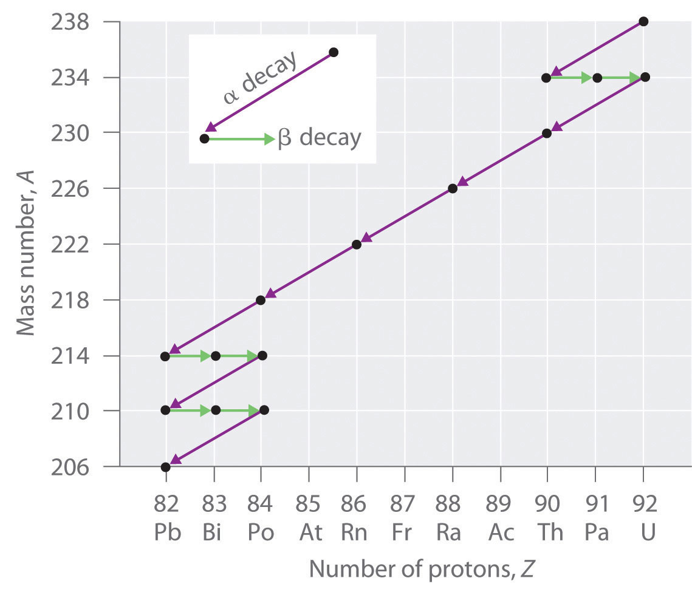Three naturally occurring radioactive decay series are known to occur currently: the uranium-238 decay series, the decay of uranium-235 to lead-207, and the decay of thorium-232 to lead-208.
Due to these radioactive decay series, small amounts of very unstable isotopes are found in ores that contain uranium or thorium. These rare, unstable isotopes should have decayed long ago to stable nuclei with a lower atomic number, and they would no longer be found on Earth. Because they are generated continuously by the decay of uranium or thorium, however, their amounts have reached a steady state, in which their rate of formation is equal to their rate of decay. In some cases, the abundance of the daughter isotopes can be used to date a material or identify its origin, as described in Chapter 14 "Chemical Kinetics".
The discovery of radioactivity in the late 19th century showed that some nuclei spontaneously transform into nuclei with a different number of protons, thereby producing a different element. When scientists realized that these naturally occurring radioactive isotopes decayed by emitting subatomic particles, they realized that—in principle—it should be possible to carry out the reverse reaction, converting a stable nucleus to another more massive nucleus by bombarding it with subatomic particles in a nuclear transmutation reaction.
The first successful nuclear transmutation reaction was carried out in 1919 by Ernest Rutherford, who showed that α particles emitted by radium could react with nitrogen nuclei to form oxygen nuclei. As shown in the following equation, a proton is emitted in the process:
Equation 20.17
Rutherford’s nuclear transmutation experiments led to the discovery of the neutron. He found that bombarding the nucleus of a light target element with an α particle usually converted the target nucleus to a product that had an atomic number higher by 1 and a mass number higher by 3 than the target nucleus. Such behavior is consistent with the emission of a proton after reaction with the α particle. Very light targets such as Li, Be, and B reacted differently, however, emitting a new kind of highly penetrating radiation rather than a proton. Because neither a magnetic field nor an electrical field could deflect these high-energy particles, Rutherford concluded that they were electrically neutral. (For more information on high-energy particles, see Chapter 1 "Introduction to Chemistry".) Other observations suggested that the mass of the neutral particle was similar to the mass of the proton. In 1932, James Chadwick (Nobel Prize in Physics, 1935), who was a student of Rutherford’s at the time, named these neutral particles neutrons and proposed that they were fundamental building blocks of the atom. The reaction that Chadwick initially used to explain the production of neutrons was as follows:
Equation 20.18
Because α particles and atomic nuclei are both positively charged, electrostatic forces cause them to repel each other. Only α particles with very high kinetic energy can overcome this repulsion and collide with a nucleus (Figure 20.6 "A Nuclear Transmutation Reaction"). Neutrons have no electrical charge, however, so they are not repelled by the nucleus. Hence bombardment with neutrons is a much easier way to prepare new isotopes of the lighter elements. In fact, carbon-14 is formed naturally in the atmosphere by bombarding nitrogen-14 with neutrons generated by cosmic rays:
Equation 20.19
Figure 20.6 A Nuclear Transmutation Reaction
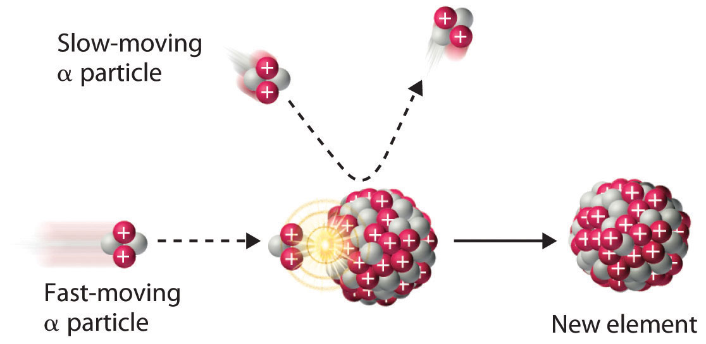Bombarding a target of one element with high-energy nuclei or subatomic particles can create new elements. Electrostatic repulsions normally prevent a positively charged particle from colliding and reacting with a positively charged nucleus. If the positively charged particle is moving at a very high speed, however, its kinetic energy may be great enough to overcome the electrostatic repulsions, and it may collide with the target nucleus. Such collisions can result in a nuclear transmutation reaction.
In 1933, Frédéric Joliot and Iréne Joliot-Curie (daughter of Marie and Pierre Curie) prepared the first artificial radioactive isotope by bombarding aluminum-27 with α particles. For each 27Al that reacted, one neutron was released. Identify the product nuclide and write a balanced nuclear equation for this transmutation reaction.
Given: reactants in a nuclear transmutation reaction
Asked for: product nuclide and balanced nuclear equation
Strategy:
A Based on the reactants and one product, identify the other product of the reaction. Use conservation of mass and charge to determine the values of Z and A of the product nuclide and thus its identity.
B Write the balanced nuclear equation for the reaction.
Solution:
A Bombarding an element with α particles usually produces an element with an atomic number that is 2 greater than the atomic number of the target nucleus. Thus we expect that aluminum (Z = 13) will be converted to phosphorus (Z = 15). With one neutron released, conservation of mass requires that the mass number of the other product be 3 greater than the mass number of the target. In this case, the mass number of the target is 27, so the mass number of the product will be 30. The second product is therefore phosphorus-30,
B The balanced nuclear equation for the reaction is as follows:
Exercise
Because all isotopes of technetium are radioactive and have short half-lives, it does not exist in nature. Technetium can, however, be prepared by nuclear transmutation reactions. For example, bombarding a molybdenum-96 target with deuterium nuclei produces technetium-97. Identify the other product of the reaction and write a balanced nuclear equation for this transmutation reaction.
Answer: neutron,
We noted earlier in this section that very heavy nuclides, corresponding to Z ≥ 104, tend to decay by spontaneous fission. Nuclides with slightly lower values of Z, such as the isotopes of uranium (Z = 92) and plutonium (Z = 94), do not undergo spontaneous fission at any significant rate. Some isotopes of these elements, however, such as and undergo induced nuclear fission when they are bombarded with relatively low-energy neutrons, as shown in the following equation for uranium-235 and in Figure 20.7 "Neutron-Induced Nuclear Fission":
Equation 20.20
Figure 20.7 Neutron-Induced Nuclear Fission
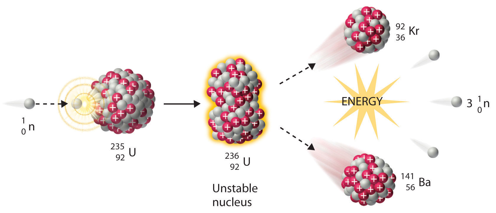Collision of a relatively slow-moving neutron with a fissile nucleus can split it into two smaller nuclei with the same or different masses. Neutrons are also released in the process, along with a great deal of energy.
Any isotope that can undergo a nuclear fission reaction when bombarded with neutrons is called a fissile isotope.
During nuclear fission, the nucleus usually divides asymmetrically rather than into two equal parts, as shown in Figure 20.7 "Neutron-Induced Nuclear Fission". Moreover, every fission event of a given nuclide does not give the same products; more than 50 different fission modes have been identified for uranium-235, for example. Consequently, nuclear fission of a fissile nuclide can never be described by a single equation. Instead, as shown in Figure 20.8 "Mass Distribution of Nuclear Fission Products of ", a distribution of many pairs of fission products with different yields is obtained, but the mass ratio of each pair of fission products produced by a single fission event is always roughly 3:2.
Figure 20.8 Mass Distribution of Nuclear Fission Products of 235U
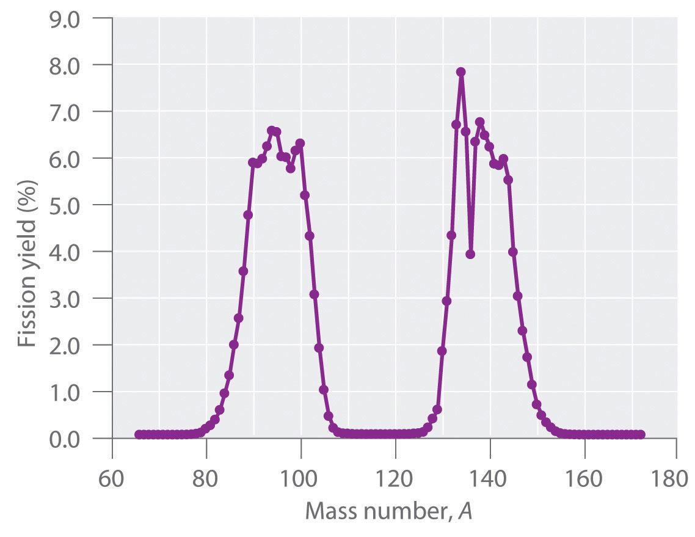Nuclear fission usually produces a range of products with different masses and yields, although the mass ratio of each pair of fission products from a fission event is approximately 3:2. As shown in this plot, more than 50 different fission products are known for 235U.
Data source: T. R. England and B. F. Rider, Los Alamos National Laboratory, LA-UR-94-3106, ENDF-349 (1993).
Uranium (Z = 92) is the heaviest naturally occurring element. Consequently, all the elements with Z > 92, the transuranium elementsAn artificial element that has been prepared by bombarding suitable target nuclei with smaller particles., are artificial and have been prepared by bombarding suitable target nuclei with smaller particles. The first of the transuranium elements to be prepared was neptunium (Z = 93), which was synthesized in 1940 by bombarding a 238U target with neutrons. As shown in Equation 20.21, this reaction occurs in two steps. Initially, a neutron combines with a 238U nucleus to form 239U, which is unstable and undergoes beta decay to produce 239Np:
Equation 20.21
Subsequent beta decay of 239Np produces the second transuranium element, plutonium (Z = 94):
Equation 20.22
Bombarding the target with more massive nuclei creates elements that have atomic numbers significantly greater than that of the target nucleus (Table 20.2 "Some Reactions Used to Synthesize Transuranium Elements"). Such techniques have resulted in the creation of the superheavy elements 114 and 116, both of which lie in or near the “island of stability” discussed in Section 20.1 "The Components of the Nucleus".
Table 20.2 Some Reactions Used to Synthesize Transuranium Elements
A device called a particle accelerator is used to accelerate positively charged particles to the speeds needed to overcome the electrostatic repulsions between them and the target nuclei by using electrical and magnetic fields. Operationally, the simplest particle accelerator is the linear accelerator (Figure 20.9 "A Linear Particle Accelerator"), in which a beam of particles is injected at one end of a long evacuated tube. Rapid alternation of the polarity of the electrodes along the tube causes the particles to be alternately accelerated toward a region of opposite charge and repelled by a region with the same charge, resulting in a tremendous acceleration as the particle travels down the tube. A modern linear accelerator such as the Stanford Linear Accelerator (SLAC) at Stanford University is about 2 miles long.
Figure 20.9 A Linear Particle Accelerator
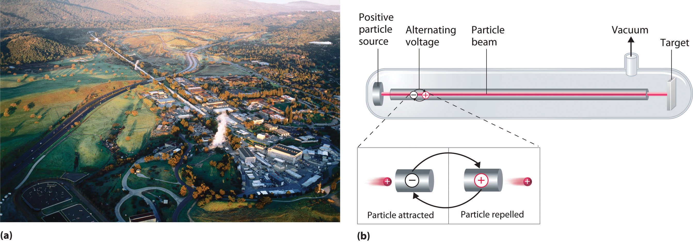(a) An aerial view of the SLAC, the longest linear particle accelerator in the world; the overall length of the tunnel is 2 miles. (b) Rapidly reversing the polarity of the electrodes in the tube causes the charged particles to be alternately attracted as they enter one section of the tube and repelled as they leave that section. As a result, the particles are continuously accelerated along the length of the tube.
To achieve the same outcome in less space, a particle accelerator called a cyclotron forces the charged particles to travel in a circular path rather than a linear one. The particles are injected into the center of a ring and accelerated by rapidly alternating the polarity of two large D-shaped electrodes above and below the ring, which accelerates the particles outward along a spiral path toward the target.
The length of a linear accelerator and the size of the D-shaped electrodes in a cyclotron severely limit the kinetic energy that particles can attain in these devices. These limitations can be overcome by using a synchrotron, a hybrid of the two designs. A synchrotron contains an evacuated tube similar to that of a linear accelerator, but the tube is circular and can be more than a mile in diameter (Figure 20.10 "A Synchrotron"). Charged particles are accelerated around the circle by a series of magnets whose polarities rapidly alternate.
Figure 20.10 A Synchrotron
An aerial photograph of what is currently the world’s most powerful particle accelerator, the Tevatron at the Fermi National Accelerator Laboratory (Fermilab) in Illinois. The large tube characteristic of a synchrotron is 4 miles in circumference, contains 1000 superconducting magnets cooled by liquid helium, and can accelerate a beam of protons to almost the speed of light, giving them an energy greater than 1 TeV (teraelectronvolt = 103 GeV = 1012 eV) for collisions with other particles.
In nuclear decay reactions (or radioactive decay), the parent nucleus is converted to a more stable daughter nucleus. Nuclei with too many neutrons decay by converting a neutron to a proton, whereas nuclei with too few neutrons decay by converting a proton to a neutron. Very heavy nuclei (with A ≥ 200 and Z > 83) are unstable and tend to decay by emitting an α particle. When an unstable nuclide undergoes radioactive decay, the total number of nucleons is conserved, as is the total positive charge. Six different kinds of nuclear decay reactions are known. Alpha decay results in the emission of an α particle, and produces a daughter nucleus with a mass number that is lower by 4 and an atomic number that is lower by 2 than the parent nucleus. Beta decay converts a neutron to a proton and emits a high-energy electron, producing a daughter nucleus with the same mass number as the parent and an atomic number that is higher by 1. Positron emission is the opposite of beta decay and converts a proton to a neutron plus a positron. Positron emission does not change the mass number of the nucleus, but the atomic number of the daughter nucleus is lower by 1 than the parent. In electron capture (EC), an electron in an inner shell reacts with a proton to produce a neutron, with emission of an x-ray. The mass number does not change, but the atomic number of the daughter is lower by 1 than the parent. In gamma emission, a daughter nucleus in a nuclear excited state undergoes a transition to a lower-energy state by emitting a γ ray. Very heavy nuclei with high neutron-to-proton ratios can undergo spontaneous fission, in which the nucleus breaks into two pieces that can have different atomic numbers and atomic masses with the release of neutrons. Many very heavy nuclei decay via a radioactive decay series—a succession of some combination of alpha- and beta-decay reactions. In nuclear transmutation reactions, a target nucleus is bombarded with energetic subatomic particles to give a product nucleus that is more massive than the original. All transuranium elements—elements with Z > 92—are artificial and must be prepared by nuclear transmutation reactions. These reactions are carried out in particle accelerators such as linear accelerators, cyclotrons, and synchrotrons.
alpha decay
beta decay
positron emission
electron capture
gamma emission
Describe the six classifications of nuclear decay reactions. What is the most common mode of decay for elements that have heavy nuclei? Why?
Complete the following table for these five nuclear reactions.
| Alpha Decay | Beta Decay | Gamma Emission | Positron Emission | Electron Capture | |
|---|---|---|---|---|---|
| identity of particle or radiation | helium-4 nucleus | ||||
| mass number of parent − mass number of daughter | 4 | ||||
| atomic number of parent − atomic number of daughter | −1 | ||||
| effect on neutron-to-proton ratio | decreases |
What is the most common decay process for elements in row 5 of the periodic table that contain too few neutrons for the number of protons present? Why?
Explain the difference between the symbols e− and β−. What is the difference in meaning between the symbols and
What is a mass number? Which particles have a mass number of zero?
What are the key differences between the equations written for chemical reactions and for nuclear reactions? How are they similar?
Can all the kinds of nuclear decay reactions discussed be characterized by the general equation: parent → daughter + particle? Explain your answer.
Which types of nuclear decay reactions conserve both mass number and atomic number? In which do the parent and daughter nuclei have the same mass number but different atomic numbers? Which do not convert one element to another?
Describe a radioactive decay series. How many series occur naturally? Of these, which one no longer occurs in nature? Why?
Only nine naturally occurring elements have an atomic number greater than 83, and all of them are radioactive. Except for some isotopes of uranium that have a very long half-life, the half-lives of the heavy elements are so short that these elements should have been completely converted to lighter, more stable elements long ago. Why are these elements still present in nature?
Why are neutrons preferred to protons when preparing new isotopes of the lighter elements?
Why are particle accelerators and cyclotrons needed to create the transuranium elements?
Both positron decay and electron capture increase the neutron-to-proton ratio; electron capture is more common for heavier elements such those of row 5.
The mass number is the sum of the numbers of protons and neutrons present. Particles with a mass number of zero include β particles (electrons) and positrons; gamma rays and x-rays also have a mass number of zero.
Unlike protons, neutrons have no charge, which minimizes the electrostatic barrier to colliding and reacting with a positively charged nucleus.
What type of particle is emitted in each nuclear reaction?
What type of particle is emitted in each nuclear reaction?
Predict the mode of decay and write a balanced nuclear reaction for each isotope.
Predict the mode of decay and write a balanced nuclear reaction for each isotope.
Balance each nuclear reaction.
Complete each nuclear reaction.
Write a balanced nuclear equation for each reaction.
Write a balanced nuclear equation for each reaction.
The decay products of several isotopes are listed here. Identify the type of radiation emitted and write a balanced nuclear equation for each.
The decay products of several isotopes are listed here. Identify the type of radiation emitted and write a balanced nuclear equation for each.
Predict the most likely mode of decay and write a balanced nuclear reaction for each isotope.
Predict the most likely mode of decay and write a balanced nuclear reaction for each isotope.
For each nuclear reaction, identify the type(s) of decay and write a balanced nuclear equation.
For each nuclear reaction, identify the type(s) of decay and write a balanced nuclear equation.
Identify the parent isotope and write a balanced nuclear reaction for each process.
Identify the parent isotope and write a balanced nuclear reaction for each process.
Write a balanced nuclear equation for each process.
Write a balanced nuclear equation for each process.
Bombarding 249Cf with 12C produced a transuranium element with a mass of 257 amu, plus several neutral subatomic particles. Identify the element and write a nuclear reaction for this transmutation.
One transuranium element, 253Es, is prepared by bombarding 238U with 15 neutrons. What is the other product of this reaction? Write a balanced transmutation reaction for this conversion.
Complete this radioactive decay series:
Complete each nuclear fission reaction.
Complete each nuclear fission reaction.
A stable nuclide absorbs a neutron, emits an electron, and then splits into two α particles. Identify the nuclide.
Using 18O, how would you synthesize an element with atomic number 106 from 249Cf? Write a balanced nuclear equation for the reaction.
Using 10B and 252Cf, how would you synthesize an element with atomic number 103? Write a balanced nuclear equation for the reaction.
Because nuclear reactions do not typically affect the valence electrons of the atom (although electron capture draws an electron from an orbital of the lowest energy level), they do not directly cause chemical changes. Nonetheless, the particles and the photons emitted during nuclear decay are very energetic, and they can indirectly produce chemical changes in the matter surrounding the nucleus that has decayed. For instance, an α particle is an ionized helium nucleus (He2+) that can act as a powerful oxidant. In this section, we describe how radiation interacts with matter and the some of the chemical and biological effects of radiation.
The effects of radiation on matter are determined primarily by the energy of the radiation, which depends on the nuclear decay reaction that produced it. Nonionizing radiationRadiation that is relatively low in energy. When it collides with an atom in a molecule or ion, most or all of its energy can be absorbed without causing a structural or a chemical change. is relatively low in energy; when it collides with an atom in a molecule or an ion, most or all of its energy can be absorbed without causing a structural or a chemical change. Instead, the kinetic energy of the radiation is transferred to the atom or molecule with which it collides, causing it to rotate, vibrate, or move more rapidly. Because this energy can be transferred to adjacent molecules or ions in the form of heat, many radioactive substances are warm to the touch. Highly radioactive elements such as polonium, for example, have been used as heat sources in the US space program. As long as the intensity of the nonionizing radiation is not great enough to cause overheating, it is relatively harmless, and its effects can be neutralized by cooling.
In contrast, ionizing radiationRadiation of a high enough energy to transfer some as it passes through matter to one or more atoms with which it collides. If enough energy is transferred, electrons can be excited to very high energy levels, resulting in the formation of positively charged ions. is higher in energy, and some of its energy can be transferred to one or more atoms with which it collides as it passes through matter. If enough energy is transferred, electrons can be excited to very high energy levels, resulting in the formation of positively charged ions:
Equation 20.23
atom + ionizing radiation → ion+ + e−Molecules that have been ionized in this way are often highly reactive, and they can decompose or undergo other chemical changes that create a cascade of reactive molecules that can damage biological tissues and other materials (Figure 20.11 "Radiation Damage"). Because the energy of ionizing radiation is very high, we often report its energy in units such as megaelectronvolts (MeV) per particle: 1 MeV/particle = 96 billion J/mol.
Figure 20.11 Radiation Damage

When high-energy particles emitted by radioactive decay interact with matter, they can break bonds or ionize molecules, resulting in changes in physical properties such as ductility or color. The glass electrical insulator on the left has not been exposed to radiation, but the insulator on the right has received intense radiation doses over a long period of time. Radiation damage changed the chemical structure of the glass, causing it to become bright blue.
The effects of ionizing radiation depend on four factors:
The relative abilities of the various forms of ionizing radiation to penetrate biological tissues are illustrated in Figure 20.12 "Depth of Penetration of Ionizing Radiation". Because of its high charge and mass, α radiation interacts strongly with matter. Consequently, it does not penetrate deeply into an object, and it can be stopped by a piece of paper, clothing, or skin. In contrast, γ rays, with no charge and essentially no mass, do not interact strongly with matter and penetrate deeply into most objects, including the human body. Several inches of lead or more than 12 inches of special concrete are needed to completely stop γ rays. Because β particles are intermediate in mass and charge between α particles and γ rays, their interaction with matter is also intermediate. Beta particles readily penetrate paper or skin, but they can be stopped by a piece of wood or a relatively thin sheet of metal.
Figure 20.12 Depth of Penetration of Ionizing Radiation

The depth of penetration of alpha, beta, and gamma radiation varies with the particle. Because α particles interact strongly with matter, they do not penetrate deeply into the human body. In contrast, β particles do not interact as strongly with matter and penetrate more deeply. Gamma rays, which have no charge, are stopped by only very dense materials and can pass right through the human body without being absorbed.
Because of their great penetrating ability, γ rays are by far the most dangerous type of radiation when they come from a source outside the body. Alpha particles, however, are the most damaging if their source is inside the body because internal tissues absorb all of their energy. Thus danger from radiation depends strongly on the type of radiation emitted and the extent of exposure, which allows scientists to safely handle many radioactive materials if they take precautions to avoid, for example, inhaling fine particulate dust that contains alpha emitters. Some properties of ionizing radiation are summarized in Table 20.3 "Some Properties of Ionizing Radiation".
Table 20.3 Some Properties of Ionizing Radiation
| Type | Energy Range (MeV) | Penetration Distance in Water* | Penetration Distance in Air* |
|---|---|---|---|
| α particles | 3–9 | < 0.05 mm | < 10 cm |
| β particles | ≤ 3 | < 4 mm | 1 m |
| x-rays | <10−2 | < 1 cm | < 3 m |
| γ rays | 10−2–101 | < 20 cm | > 3 m |
| *Distance at which half of the radiation has been absorbed. | |||
Born in the Lower Rhine Province of Germany, Röntgen was the only child of a cloth manufacturer and merchant. His family moved to the Netherlands where he showed no particular aptitude in school, but where he was fond of roaming the countryside. Röntgen was expelled from technical school in Utrecht after being unjustly accused of drawing a caricature of one of the teachers. He began studying mechanical engineering in Zurich, which he could enter without having the credentials of a regular student, and received a PhD at the University of Zurich in 1869. In 1876 he became professor of physics.
There are many different ways to measure radiation exposure, or the dose. The roentgen (R)A unit that describes the amount of energy absorbed by dry air and measures the radiation exposure or dose., which measures the amount of energy absorbed by dry air, can be used to describe quantitative exposure.Named after the German physicist Wilhelm Röntgen (1845–1923; Nobel Prize in Physics, 1901), who discovered x-rays. The roentgen is actually defined as the amount of radiation needed to produce an electrical charge of 2.58 × 10−4 C in 1 kg of dry air. Damage to biological tissues, however, is proportional to the amount of energy absorbed by tissues, not air. The most common unit used to measure the effects of radiation on biological tissue is the rad (radiation absorbed dose)A unit used to measure the effects of radiation on biological tissues; the amount of radiation that causes 0.01 J of energy to be absorbed by 1 kg of matter.; the SI equivalent is the gray (Gy). The rad is defined as the amount of radiation that causes 0.01 J of energy to be absorbed by 1 kg of matter, and the gray is defined as the amount of radiation that causes 1 J of energy to be absorbed per kilogram:
Equation 20.24
Thus a 70 kg human who receives a dose of 1.0 rad over his or her entire body absorbs 0.010 J/70 kg = 1.4 × 10−4 J, or 0.14 mJ. To put this in perspective, 0.14 mJ is the amount of energy transferred to your skin by a 3.8 × 10−5 g droplet of boiling water. Because the energy of the droplet of water is transferred to a relatively large area of tissue, it is harmless. A radioactive particle, however, transfers its energy to a single molecule, which makes it the atomic equivalent of a bullet fired from a high-powered rifle.
Because α particles have a much higher mass and charge than β particles or γ rays, the difference in mass between α and β particles is analogous to being hit by a bowling ball instead of a table tennis ball traveling at the same speed. Thus the amount of tissue damage caused by 1 rad of α particles is much greater than the damage caused by 1 rad of β particles or γ rays. Thus a unit called the rem (roentgen equivalent in man)A unit that describes the actual amount of tissue damage caused by a given amount of radiation and equal to the number of rads multiplied by the RBE. was devised to describe the actual amount of tissue damage caused by a given amount of radiation. The number of rems of radiation is equal to the number of rads multiplied by the RBE (relative biological effectiveness) factor, which is 1 for β particles, γ rays, and x-rays and about 20 for α particles. Because actual radiation doses tend to be very small, most measurements are reported in millirems (1 mrem = 10−3 rem).
We are continuously exposed to measurable background radiation from a variety of natural sources, which, on average, is equal to about 150–600 mrem/yr (Figure 20.13 "The Radiation Exposure of a Typical Adult in the United States"). One component of background radiation is cosmic rays, high-energy particles and γ rays emitted by the sun and other stars, which bombard Earth continuously. Because cosmic rays are partially absorbed by the atmosphere before they reach Earth’s surface, the exposure of people living at sea level (about 30 mrem/yr) is significantly less than the exposure of people living at higher altitudes (about 50 mrem/yr in Denver, Colorado). Every 4 hours spent in an airplane at greater than 30,000 ft adds about 1 mrem to a person’s annual radiation exposure.
Figure 20.13 The Radiation Exposure of a Typical Adult in the United States

The average radiation dose from natural sources for an adult in the United States is about 150–600 mrem/yr. Radon accounts for more than half of an adult’s total radiation exposure, whereas background radiation (terrestrial and cosmogenic) and exposure from medical sources account for about 15% each.
Data source: Office of Civilian Radioactive Waste Management
A second component of background radiation is cosmogenic radiation, produced by the interaction of cosmic rays with gases in the upper atmosphere. When high-energy cosmic rays collide with oxygen and nitrogen atoms, neutrons and protons are released. These, in turn, react with other atoms to produce radioactive isotopes, such as 14C:
Equation 20.25
The carbon atoms react with oxygen atoms to form CO2, which is eventually washed to Earth’s surface in rain and taken up by plants. About 1 atom in 1 × 1012 of the carbon atoms in our bodies is radioactive 14C, which decays by beta emission. About 5000 14C nuclei disintegrate in your body during the 15 s or so that it takes you to read this paragraph. Tritium (3H) is also produced in the upper atmosphere and falls to Earth in precipitation. The total radiation dose attributable to 14C is estimated to be 1 mrem/yr, while that due to 3H is about 1000 times less.
The third major component of background radiation is terrestrial radiation, which is due to the remnants of radioactive elements that were present on primordial Earth and their decay products. For example, many rocks and minerals in the soil contain small amounts of radioactive isotopes, such as 232Th and 238U, as well as radioactive daughter isotopes, such as 226Ra. The amount of background radiation from these sources is about the same as that from cosmic rays (approximately 30 mrem/yr). These isotopes are also found in small amounts in building materials derived from rocks and minerals, which significantly increases the radiation exposure for people who live in brick or concrete-block houses (60–160 mrem/yr) instead of houses made of wood (10–20 mrem/yr). Our tissues also absorb radiation (about 40 mrem/yr) from naturally occurring radioactive elements that are present in our bodies. For example, the average adult contains about 140 g of potassium as the K+ ion. Naturally occurring potassium contains 0.0117% 40K, which decays by emitting both a β particle and a γ ray. In the last 20 seconds, about the time it took you to read this paragraph, approximately 40,000 40K nuclei disintegrated in your body.
By far the most important source of background radiation is radon, the heaviest of the noble gases (group 18). Radon-222 is produced during the decay of 238U, and other isotopes of radon are produced by the decay of other heavy elements. Even though radon is chemically inert, all its isotopes are radioactive. For example, 222Rn undergoes two successive alpha-decay events to give 214Pb:
Equation 20.26
Because radon is a dense gas, it tends to accumulate in enclosed spaces such as basements, especially in locations where the soil contains greater-than-average amounts of naturally occurring uranium minerals. Under most conditions, radioactive decay of radon poses no problems because of the very short range of the emitted α particle. If an atom of radon happens to be in your lungs when it decays, however, the chemically reactive daughter isotope polonium-218 can become irreversibly bound to molecules in the lung tissue. Subsequent decay of 218Po releases an α particle directly into one of the cells lining the lung, and the resulting damage can eventually cause lung cancer. The 218Po isotope is also readily absorbed by particles in cigarette smoke, which adhere to the surface of the lungs and can hold the radioactive isotope in place. Recent estimates suggest that radon exposure is a contributing factor in about 15% of the deaths due to lung cancer. Because of the potential health problem radon poses, many states require houses to be tested for radon before they can be sold. By current estimates, radon accounts for more than half of the radiation exposure of a typical adult in the United States.
In addition to naturally occurring background radiation, humans are exposed to small amounts of radiation from a variety of artificial sources. The most important of these are the x-rays used for diagnostic purposes in medicine and dentistry, which are photons with much lower energy than γ rays. A single chest x-ray provides a radiation dose of about 10 mrem, and a dental x-ray about 2–3 mrem. Other minor sources include television screens and computer monitors with cathode-ray tubes, which also produce x-rays. Luminescent paints for watch dials originally used radium, a highly toxic alpha emitter if ingested by those painting the dials. Radium was replaced by tritium (3H) and promethium (147Pr), which emit low-energy β particles that are absorbed by the watch crystal or the glass covering the instrument. Radiation exposure from television screens, monitors, and luminescent dials totals about 2 mrem/yr. Residual fallout from previous atmospheric nuclear-weapons testing is estimated to account for about twice this amount, and the nuclear power industry accounts for less than 1 mrem/yr (about the same as a single 4 h jet flight).
Calculate the annual radiation dose in rads a typical 70 kg chemistry student receives from the naturally occurring 40K in his or her body, which contains about 140 g of potassium (as the K+ ion). The natural abundance of 40K is 0.0117%. Each 1.00 mol of 40K undergoes 1.05 × 107 decays/s, and each decay event is accompanied by the emission of a 1.32 MeV β particle.
Given: mass of student, mass of isotope, natural abundance, rate of decay, and energy of particle
Asked for: annual radiation dose in rads
Strategy:
A Calculate the number of moles of 40K present using its mass, molar mass, and natural abundance.
B Determine the number of decays per year for this amount of 40K.
C Multiply the number of decays per year by the energy associated with each decay event. To obtain the annual radiation dose, use the mass of the student to convert this value to rads.
Solution:
A The number of moles of 40K present in the body is the total number of potassium atoms times the natural abundance of potassium atoms present as 40K divided by the atomic mass of 40K:
B We are given the number of atoms of 40K that decay per second in 1.00 mol of 40K, so the number of decays per year is as follows:
C The total energy the body receives per year from the decay of 40K is equal to the total number of decays per year multiplied by the energy associated with each decay event:
We use the definition of the rad (1 rad = 10−2 J/kg of tissue) to convert this figure to a radiation dose in rads. If we assume the dose is equally distributed throughout the body, then the radiation dose per year is as follows:
This corresponds to almost half of the normal background radiation most people experience.
Exercise
Because strontium is chemically similar to calcium, small amounts of the Sr2+ ion are taken up by the body and deposited in calcium-rich tissues such as bone, using the same mechanism that is responsible for the absorption of Ca2+. Consequently, the radioactive strontium (90Sr) found in fission waste and released by atmospheric nuclear-weapons testing is a major health concern. A normal 70 kg human body has about 280 mg of strontium, and each mole of 90Sr undergoes 4.55 × 1014 decays/s by the emission of a 0.546 MeV β particle. What would be the annual radiation dose in rads for a 70 kg person if 0.10% of the strontium ingested were 90Sr?
Answer: 5.7 × 103 rad/yr (which is 10 times the fatal dose)
One of the more controversial public policy issues debated today is whether the radiation exposure from artificial sources, when combined with exposure from natural sources, poses a significant risk to human health. The effects of single radiation doses of different magnitudes on humans are listed in Table 20.4 "The Effects of a Single Radiation Dose on a 70 kg Human". Because of the many factors involved in radiation exposure (length of exposure, intensity of the source, and energy and type of particle), it is difficult to quantify the specific dangers of one radioisotope versus another. Nonetheless, some general conclusions regarding the effects of radiation exposure are generally accepted as valid.
Table 20.4 The Effects of a Single Radiation Dose on a 70 kg Human
| Dose (rem) | Symptoms/Effects |
|---|---|
| < 5 | no observable effect |
| 5–20 | possible chromosomal damage |
| 20–100 | temporary reduction in white blood cell count |
| 50–100 | temporary sterility in men (up to a year) |
| 100–200 | mild radiation sickness, vomiting, diarrhea, fatigue; immune system suppressed; bone growth in children retarded |
| > 300 | permanent sterility in women |
| > 500 | fatal to 50% within 30 days; destruction of bone marrow and intestine |
| > 3000 | fatal within hours |
Radiation doses of 600 rem and higher are invariably fatal, while a dose of 500 rem kills half the exposed subjects within 30 days. Smaller doses (≤ 50 rem) appear to cause only limited health effects, even though they correspond to tens of years of natural radiation. This does not, however, mean that such doses have no ill effects; they may cause long-term health problems, such as cancer or genetic changes that affect offspring. The possible detrimental effects of the much smaller doses attributable to artificial sources (< 100 mrem/yr) are more difficult to assess.
The tissues most affected by large, whole-body exposures are bone marrow, intestinal tissue, hair follicles, and reproductive organs, all of which contain rapidly dividing cells. The susceptibility of rapidly dividing cells to radiation exposure explains why cancers are often treated by radiation. Because cancer cells divide faster than normal cells, they are destroyed preferentially by radiation. Long-term radiation-exposure studies on fruit flies show a linear relationship between the number of genetic defects and both the magnitude of the dose and the exposure time. In contrast, similar studies on mice show a much lower number of defects when a given dose of radiation is spread out over a long period of time rather than received all at once. Both patterns are plotted in Figure 20.14 "Two Possible Relationships between the Number of Genetic Defects and Radiation Exposure", but which of the two is applicable to humans? According to one hypothesis, mice have very low risk from low doses because their bodies have ways of dealing with the damage caused by natural radiation. At much higher doses, however, their natural repair mechanisms are overwhelmed, leading to irreversible damage. Because mice are biochemically much more similar to humans than are fruit flies, many scientists believe that this model also applies to humans. In contrast, the linear model assumes that all exposure to radiation is intrinsically damaging and suggests that stringent regulation of low-level radiation exposure is necessary. Which view is more accurate? The answer—while yet unknown—has extremely important consequences for regulating radiation exposure.
Figure 20.14 Two Possible Relationships between the Number of Genetic Defects and Radiation Exposure

Studies on fruit flies show a linear relationship between the number of genetic defects and the magnitude of the radiation dose and exposure time, which is consistent with a cumulative effect of radiation. In contrast, studies on mice show an S-shaped curve, which suggests that the number of defects is lower when radiation exposure occurs over a longer time. Which of these relationships is more applicable to humans is a matter of considerable debate.
The effects of radiation on matter depend on the energy of the radiation. Nonionizing radiation is relatively low in energy, and the energy is transferred to matter in the form of heat. Ionizing radiation is relatively high in energy, and when it collides with an atom, it can completely remove an electron to form a positively charged ion that can damage biological tissues. Alpha particles do not penetrate very far into matter, whereas γ rays penetrate more deeply. Common units of radiation exposure, or dose, are the roentgen (R), the amount of energy absorbed by dry air, and the rad (radiation absorbed dose), the amount of radiation that produces 0.01 J of energy in 1 kg of matter. The rem (roentgen equivalent in man) measures the actual amount of tissue damage caused by a given amount of radiation. Natural sources of radiation include cosmic radiation, consisting of high-energy particles and γ rays emitted by the sun and other stars; cosmogenic radiation, which is produced by the interaction of cosmic rays with gases in the upper atmosphere; and terrestrial radiation, from radioactive elements present on primordial Earth and their decay products. The risks of ionizing radiation depend on the intensity of the radiation, the mode of exposure, and the duration of the exposure.
Why are many radioactive substances warm to the touch? Why do many radioactive substances glow?
Describe the differences between nonionizing and ionizing radiation in terms of the intensity of energy emitted and the effect each has on an atom or molecule after collision. Which nuclear decay reactions are more likely to produce ionizing radiation? nonionizing radiation?
Would you expect nonionizing or ionizing radiation to be more effective at treating cancer? Why?
Historically, concrete shelters have been used to protect people from nuclear blasts. Comment on the effectiveness of such shelters.
Gamma rays are a very high-energy radiation, yet α particles inflict more damage on biological tissue. Why?
List the three primary sources of naturally occurring radiation. Explain the factors that influence the dose that one receives throughout the year. Which is the largest contributor to overall exposure? Which is the most hazardous?
Because radon is a noble gas, it is inert and generally unreactive. Despite this, exposure to even low concentrations of radon in air is quite dangerous. Describe the physical consequences of exposure to radon gas. Why are people who smoke more susceptible to these effects?
Most medical imaging uses isotopes that have extremely short half-lives. These isotopes usually undergo only one kind of nuclear decay reaction. Which kind of decay reaction is usually used? Why? Why would a short half-life be preferred in these cases?
Which would you prefer: one exposure of 100 rem, or 10 exposures of 10 rem each? Explain your rationale.
Ionizing radiation is higher in energy and causes greater tissue damage, so it is more likely to destroy cancerous cells.
Ten exposures of 10 rem are less likely to cause major damage.
A 2.14 kg sample of rock contains 0.0985 g of uranium. How much energy is emitted over 25 yr if 99.27% of the uranium is 238U, which has a half-life of 4.46 × 109 yr, if each decay event is accompanied by the release of 4.039 MeV? If a 180 lb individual absorbs all of the emitted radiation, how much radiation has been absorbed in rads?
There is a story about a “radioactive boy scout” who attempted to convert thorium-232, which he isolated from about 1000 gas lantern mantles, to uranium-233 by bombarding the thorium with neutrons. The neutrons were generated via bombarding an aluminum target with α particles from the decay of americium-241, which was isolated from 100 smoke detectors. Write balanced nuclear reactions for these processes. The “radioactive boy scout” spent approximately 2 h/day with his experiment for 2 yr. Assuming that the alpha emission of americium has an energy of 5.24 MeV/particle and that the americium-241 was undergoing 3.5 × 106 decays/s, what was the exposure of the 60.0 kg scout in rads? The intrepid scientist apparently showed no ill effects from this exposure. Why?
Nuclear reactions, like chemical reactions, are accompanied by changes in energy. The energy changes in nuclear reactions, however, are enormous compared with those of even the most energetic chemical reactions. In fact, the energy changes in a typical nuclear reaction are so large that they result in a measurable change of mass. In this section, we describe the relationship between mass and energy in nuclear reactions and show how the seemingly small changes in mass that accompany nuclear reactions result in the release of enormous amounts of energy.
The relationship between mass (m) and energy (E) was introduced in Chapter 6 "The Structure of Atoms" and is expressed in the following equation:
Equation 20.27
E = mc2where c is the speed of light (2.998 × 108 m/s), and E and m are expressed in units of joules and kilograms, respectively. Albert Einstein first derived this relationship in 1905 as part of his special theory of relativity: the mass of a particle is directly proportional to its energy. Thus according to Equation 20.27, every mass has an associated energy, and similarly, any reaction that involves a change in energy must be accompanied by a change in mass. This implies that all exothermic reactions should be accompanied by a decrease in mass, and all endothermic reactions should be accompanied by an increase in mass. Given the law of conservation of mass, how can this be true? (For more information on the conservation of mass, see Chapter 3 "Chemical Reactions".) The solution to this apparent contradiction is that chemical reactions are indeed accompanied by changes in mass, but these changes are simply too small to be detected.This situation is similar to the wave–particle duality discussed in Chapter 6 "The Structure of Atoms". As you may recall, all particles exhibit wavelike behavior, but the wavelength is inversely proportional to the mass of the particle (actually, to its momentum, the product of its mass and velocity). Consequently, wavelike behavior is detectable only for particles with very small masses, such as electrons. For example, the chemical equation for the combustion of graphite to produce carbon dioxide is as follows:
Equation 20.28
Combustion reactions are typically carried out at constant pressure, and under these conditions, the heat released or absorbed is equal to ΔH. As you learned in Chapter 18 "Chemical Thermodynamics", when a reaction is carried out at constant volume, the heat released or absorbed is equal to ΔE. For most chemical reactions, however, ΔE ≈ ΔH. If we rewrite Einstein’s equation as
Equation 20.29
we can rearrange the equation to obtain the following relationship between the change in mass and the change in energy:
Equation 20.30
Because 1 J = 1 (kg·m2)/s2, the change in mass is as follows:
Equation 20.31
This is a mass change of about 3.6 × 10−10 g/g carbon that is burned, or about 100-millionths of the mass of an electron per atom of carbon. In practice, this mass change is much too small to be measured experimentally and is negligible.
In contrast, for a typical nuclear reaction, such as the radioactive decay of 14C to 14N and an electron (a β particle), there is a much larger change in mass:
Equation 20.32
We can use the experimentally measured masses of subatomic particles and common isotopes given in Table 20.1 "Nuclear Decay Emissions and Their Symbols" and Chapter 33 "Appendix I: Experimentally Measured Masses of Selected Isotopes" to calculate the change in mass directly. The reaction involves the conversion of a neutral 14C atom to a positively charged 14N ion (with six, not seven, electrons) and a negatively charged β particle (an electron), so the mass of the products is identical to the mass of a neutral 14N atom. The total change in mass during the reaction is therefore the difference between the mass of a neutral 14N atom (14.003074 amu) and the mass of a 14C atom (14.003242 amu):
Equation 20.33
The difference in mass, which has been released as energy, corresponds to almost one-third of an electron. The change in mass for the decay of 1 mol of 14C is −0.000168 g = −1.68 × 10−4 g = −1.68 × 10−7 kg. Although a mass change of this magnitude may seem small, it is about 1000 times larger than the mass change for the combustion of graphite. The energy change is as follows:
Equation 20.34
The energy released in this nuclear reaction is more than 100,000 times greater than that of a typical chemical reaction, even though the decay of 14C is a relatively low-energy nuclear reaction.
Because the energy changes in nuclear reactions are so large, they are often expressed in kiloelectronvolts (1 keV = 103 eV), megaelectronvolts (1 MeV = 106 eV), and even gigaelectronvolts (1 GeV = 109 eV) per atom or particle. The change in energy that accompanies a nuclear reaction can be calculated from the change in mass using the relationship 1 amu = 931 MeV. The energy released by the decay of one atom of 14C is thus
Equation 20.35
Calculate the changes in mass (in atomic mass units) and energy (in joules per mole and electronvolts per atom) that accompany the radioactive decay of 238U to 234Th and an α particle. The α particle absorbs two electrons from the surrounding matter to form a helium atom.
Given: nuclear decay reaction
Asked for: changes in mass and energy
Strategy:
A Use the mass values in Table 20.1 "Nuclear Decay Emissions and Their Symbols" and Chapter 33 "Appendix I: Experimentally Measured Masses of Selected Isotopes" to calculate the change in mass for the decay reaction in atomic mass units.
B Use Equation 20.30 to calculate the change in energy in joules per mole.
C Use the relationship between atomic mass units and megaelectronvolts to calculate the change in energy in electronvolts per atom.
Solution:
A Using particle and isotope masses from Table 20.1 "Nuclear Decay Emissions and Their Symbols" and Chapter 33 "Appendix I: Experimentally Measured Masses of Selected Isotopes", we can calculate the change in mass as follows:
B Thus the change in mass for 1 mol of 238U is −0.004584 g or −4.584 × 10−6 kg. The change in energy in joules per mole is as follows:
ΔE = (Δm)c2 = (−4.584 × 10−6 kg)(2.998 × 108 m/s)2 = −4.120 × 1011 J/molC The change in energy in electronvolts per atom is as follows:
Exercise
Calculate the changes in mass (in atomic mass units) and energy (in kilojoules per mole and kiloelectronvolts per atom) that accompany the radioactive decay of tritium (3H) to 3He and a β particle.
Answer: Δm = −2.0 × 10−5 amu; ΔE = −1.9 × 106 kJ/mol = −19 keV/atom
We have seen that energy changes in both chemical and nuclear reactions are accompanied by changes in mass. Einstein’s equation, which allows us to interconvert mass and energy, has another interesting consequence: The mass of an atom is always less than the sum of the masses of its component particles. The only exception to this rule is hydrogen-1 (1H), whose measured mass of 1.007825 amu is identical to the sum of the masses of a proton and an electron. In contrast, the experimentally measured mass of an atom of deuterium (2H) is 2.014102 amu, although its calculated mass is 2.016490 amu:
Equation 20.36
The difference between the sum of the masses of the components and the measured atomic mass is called the mass defectThe difference between the sum of the masses of the components of an atom (protons, neutrons, and electrons) and the measured atomic mass. of the nucleus. Just as a molecule is more stable than its isolated atoms, a nucleus is more stable (lower in energy) than its isolated components. Consequently, when isolated nucleons assemble into a stable nucleus, energy is released. According to Equation 20.30, this release of energy must be accompanied by a decrease in the mass of the nucleus.
The amount of energy released when a nucleus forms from its component nucleons is the nuclear binding energyThe amount of energy released when a nucleus forms from its component nucleons, which corresponds to the mass defect of the nucleus. (Figure 20.15 "Nuclear Binding Energy in Deuterium"). In the case of deuterium, the mass defect is 0.002388 amu, which corresponds to a nuclear binding energy of 2.22 MeV for the deuterium nucleus. Because the magnitude of the mass defect is proportional to the nuclear binding energy, both values indicate the stability of the nucleus.
Just as a molecule is more stable (lower in energy) than its isolated atoms, a nucleus is more stable than its isolated components.
Figure 20.15 Nuclear Binding Energy in Deuterium

The mass of a 2H atom is less than the sum of the masses of a proton, a neutron, and an electron by 0.002388 amu; the difference in mass corresponds to the nuclear binding energy. The larger the value of the mass defect, the greater the nuclear binding energy and the more stable the nucleus.
Not all nuclei are equally stable. Chemists describe the relative stability of different nuclei by comparing the binding energy per nucleon, which is obtained by dividing the nuclear binding energy by the mass number (A) of the nucleus. As shown in Figure 20.16 "The Curve of Nuclear Binding Energy", the binding energy per nucleon increases rapidly with increasing atomic number until about Z = 26, where it levels off to about 8–9 MeV per nucleon and then decreases slowly. The initial increase in binding energy is not a smooth curve but exhibits sharp peaks corresponding to the light nuclei that have equal numbers of protons and neutrons (e.g., 4He, 12C, and 16O). As mentioned earlier, these are particularly stable combinations.
Because the maximum binding energy per nucleon is reached at 56Fe, all other nuclei are thermodynamically unstable with regard to the formation of 56Fe. Consequently, heavier nuclei (toward the right in Figure 20.16 "The Curve of Nuclear Binding Energy") should spontaneously undergo reactions such as alpha decay, which result in a decrease in atomic number. Conversely, lighter elements (on the left in Figure 20.16 "The Curve of Nuclear Binding Energy") should spontaneously undergo reactions that result in an increase in atomic number. This is indeed the observed pattern.
Figure 20.16 The Curve of Nuclear Binding Energy

This plot of the average binding energy per nucleon as a function of atomic number shows that the binding energy per nucleon increases with increasing atomic number until about Z = 26, levels off, and then decreases. The sharp peaks correspond to light nuclei that have equal numbers of protons and neutrons.
Heavier nuclei spontaneously undergo nuclear reactions that decrease their atomic number. Lighter nuclei spontaneously undergo nuclear reactions that increase their atomic number.
Calculate the total nuclear binding energy (in megaelectronvolts) and the binding energy per nucleon for 56Fe. The experimental mass of the nuclide is given in Chapter 33 "Appendix I: Experimentally Measured Masses of Selected Isotopes".
Given: nuclide and mass
Asked for: nuclear binding energy and binding energy per nucleon
Strategy:
A Sum the masses of the protons, electrons, and neutrons or, alternatively, use the mass of the appropriate number of 1H atoms (because its mass is the same as the mass of one electron and one proton).
B Calculate the mass defect by subtracting the experimental mass from the calculated mass.
C Determine the nuclear binding energy by multiplying the mass defect by the change in energy in electronvolts per atom. Divide this value by the number of nucleons to obtain the binding energy per nucleon.
Solution:
A An iron-56 atom has 26 protons, 26 electrons, and 30 neutrons. We could add the masses of these three sets of particles; however, noting that 26 protons and 26 electrons are equivalent to 26 1H atoms, we can calculate the sum of the masses more quickly as follows:
B We subtract to find the mass defect:
C The nuclear binding energy is thus 0.528462 amu × 931 MeV/amu = 492 MeV. The binding energy per nucleon is 492 MeV/56 nucleons = 8.79 MeV/nucleon.
Exercise
Calculate the total nuclear binding energy (in megaelectronvolts) and the binding energy per nucleon for 238U.
Answer: 1800 MeV/238U; 7.57 MeV/nucleon
First discussed in Section 20.2 "Nuclear Reactions", nuclear fissionThe splitting of a heavy nucleus into two lighter ones. is the splitting of a heavy nucleus into two lighter ones. Fission was discovered in 1938 by the German scientists Otto Hahn, Lise Meitner, and Fritz Strassmann, who bombarded a sample of uranium with neutrons in an attempt to produce new elements with Z > 92. They observed that lighter elements such as barium (Z = 56) were formed during the reaction, and they realized that such products had to originate from the neutron-induced fission of uranium-235:
Equation 20.37
This hypothesis was confirmed by detecting the krypton-92 fission product. As discussed in Section 20.2 "Nuclear Reactions", the nucleus usually divides asymmetrically rather than into two equal parts, and the fission of a given nuclide does not give the same products every time.
In a typical nuclear fission reaction, more than one neutron is released by each dividing nucleus. When these neutrons collide with and induce fission in other neighboring nuclei, a self-sustaining series of nuclear fission reactions known as a nuclear chain reactionA self-sustaining series of nuclear fission reactions. can result (Figure 20.16 "The Curve of Nuclear Binding Energy"). For example, the fission of 235U releases two to three neutrons per fission event. If absorbed by other 235U nuclei, those neutrons induce additional fission events, and the rate of the fission reaction increases geometrically. Each series of events is called a generation. Experimentally, it is found that some minimum mass of a fissile isotope is required to sustain a nuclear chain reaction; if the mass is too low, too many neutrons are able to escape without being captured and inducing a fission reaction. The minimum mass capable of supporting sustained fission is called the critical massThe minimum mass of a fissile isotope capable of supporting sustained fission.. This amount depends on the purity of the material and the shape of the mass, which corresponds to the amount of surface area available from which neutrons can escape, and on the identity of the isotope. If the mass of the fissile isotope is greater than the critical mass, then under the right conditions, the resulting supercritical mass can release energy explosively. The enormous energy released from nuclear chain reactions is responsible for the massive destruction caused by the detonation of nuclear weapons such as fission bombs, but it also forms the basis of the nuclear power industry.
Nuclear fusionThe combining of two light nuclei to produce a heavier, more stable nucleus., in which two light nuclei combine to produce a heavier, more stable nucleus, is the opposite of nuclear fission. As in the nuclear transmutation reactions discussed in Section 20.2 "Nuclear Reactions", the positive charge on both nuclei results in a large electrostatic energy barrier to fusion. This barrier can be overcome if one or both particles have sufficient kinetic energy to overcome the electrostatic repulsions, allowing the two nuclei to approach close enough for a fusion reaction to occur. The principle is similar to adding heat to increase the rate of a chemical reaction. (For more information on chemical kinetics, see Chapter 14 "Chemical Kinetics".) As shown in the plot of nuclear binding energy per nucleon versus atomic number in Figure 20.17 "A Nuclear Chain Reaction", fusion reactions are most exothermic for the lightest element. For example, in a typical fusion reaction, two deuterium atoms combine to produce helium-3, a process known as deuterium–deuterium fusion (D–D fusion):
Equation 20.38
Figure 20.17 A Nuclear Chain Reaction

The process is initiated by the collision of a single neutron with a 235U nucleus, which undergoes fission, as shown in Figure 20.6 "A Nuclear Transmutation Reaction". Because each neutron released can cause the fission of another 235U nucleus, the rate of a fission reaction accelerates geometrically. Each series of events is a generation.
In another reaction, a deuterium atom and a tritium atom fuse to produce helium-4 (Figure 20.18 "Nuclear Fusion"), a process known as deuterium–tritium fusion (D–T fusion):
Equation 20.39
Figure 20.18 Nuclear Fusion

In a nuclear fusion reaction, lighter nuclei combine to produce a heavier nucleus. As shown, fusion of 3H and 2H to give 4He and a neutron releases an enormous amount of energy. In principle, nuclear fusion can produce much more energy than fission, but very high kinetic energy is required to overcome electrostatic repulsions between the positively charged nuclei and initiate the fusion reaction.
Initiating these reactions, however, requires a temperature comparable to that in the interior of the sun (approximately 1.5 × 107 K). Currently, the only method available on Earth to achieve such a temperature is the detonation of a fission bomb. For example, the so-called hydrogen bomb (or H bomb) is actually a deuterium–tritium bomb (a D–T bomb), which uses a nuclear fission reaction to create the very high temperatures needed to initiate fusion of solid lithium deuteride (6LiD), which releases neutrons that then react with 6Li, producing tritium. The deuterium-tritium reaction releases energy explosively. Example 9 and its corresponding exercise demonstrate the enormous amounts of energy produced by nuclear fission and fusion reactions. In fact, fusion reactions are the power sources for all stars, including our sun.

Calculate the amount of energy (in electronvolts per atom and kilojoules per mole) released when the neutron-induced fission of 235U produces 144Cs, 90Rb, and two neutrons:
Given: balanced nuclear reaction
Asked for: energy released in electronvolts per atom and kilojoules per mole
Strategy:
A Following the method used in Example 7, calculate the change in mass that accompanies the reaction. Convert this value to the change in energy in electronvolts per atom.
B Calculate the change in mass per mole of 235U. Then use Equation 20.29 to calculate the change in energy in kilojoules per mole.
Solution:
A The change in mass that accompanies the reaction is as follows:
The change in energy in electronvolts per atom is as follows:
B The change in mass per mole of is −0.188386 g = −1.88386 × 10−4 kg, so the change in energy in kilojoules per mole is as follows:
Exercise
Calculate the amount of energy (in electronvolts per atom and kilojoules per mole) released when deuterium and tritium fuse to give helium-4 and a neutron:
Answer: ΔE = −17.6 MeV/atom = −1.697 × 109 kJ/mol
Nuclear reactions are accompanied by large changes in energy, which result in detectable changes in mass. The change in mass is related to the change in energy according to Einstein’s equation: ΔE = (Δm)c2. Large changes in energy are usually reported in kiloelectronvolts or megaelectronvolts (thousands or millions of electronvolts). With the exception of 1H, the experimentally determined mass of an atom is always less than the sum of the masses of the component particles (protons, neutrons, and electrons) by an amount called the mass defect of the nucleus. The energy corresponding to the mass defect is the nuclear binding energy, the amount of energy released when a nucleus forms from its component particles. In nuclear fission, nuclei split into lighter nuclei with an accompanying release of multiple neutrons and large amounts of energy. The critical mass is the minimum mass required to support a self-sustaining nuclear chain reaction. Nuclear fusion is a process in which two light nuclei combine to produce a heavier nucleus plus a great deal of energy.
How do chemical reactions compare with nuclear reactions with respect to mass changes? Does either type of reaction violate the law of conservation of mass? Explain your answers.
Why is the amount of energy released by a nuclear reaction so much greater than the amount of energy released by a chemical reaction?
Explain why the mass of an atom is less than the sum of the masses of its component particles.
The stability of a nucleus can be described using two values. What are they, and how do they differ from each other?
In the days before true chemistry, ancient scholars (alchemists) attempted to find the philosopher’s stone, a material that would enable them to turn lead into gold. Is the conversion of Pb → Au energetically favorable? Explain why or why not.
Describe the energy barrier to nuclear fusion reactions and explain how it can be overcome.
Imagine that the universe is dying, the stars have burned out, and all the elements have undergone fusion or radioactive decay. What would be the most abundant element in this future universe? Why?
Numerous elements can undergo fission, but only a few can be used as fuels in a reactor. What aspect of nuclear fission allows a nuclear chain reaction to occur?
How are transmutation reactions and fusion reactions related? Describe the main impediment to fusion reactions and suggest one or two ways to surmount this difficulty.
Using the information provided in Chapter 33 "Appendix I: Experimentally Measured Masses of Selected Isotopes", complete each reaction and calculate the amount of energy released from each in kilojoules.
Using the information provided in Chapter 33 "Appendix I: Experimentally Measured Masses of Selected Isotopes", complete each reaction and calculate the amount of energy released from each in kilojoules.
Using the information provided in Chapter 33 "Appendix I: Experimentally Measured Masses of Selected Isotopes", complete each reaction and calculate the amount of energy released from each in kilojoules per mole.
Using the information provided in Chapter 33 "Appendix I: Experimentally Measured Masses of Selected Isotopes", complete each reaction and then calculate the amount of energy released from each in kilojoules per mole.
Using the information provided in Chapter 33 "Appendix I: Experimentally Measured Masses of Selected Isotopes", predict whether each reaction is favorable and the amount of energy released or required in megaelectronvolts and kilojoules per mole.
Using the information provided, predict whether each reaction is favorable and the amount of energy released or required in megaelectronvolts and kilojoules per mole.
Calculate the total nuclear binding energy (in megaelectronvolts) and the binding energy per nucleon for 87Sr if the measured mass of 87Sr is 86.908877 amu.
Calculate the total nuclear binding energy (in megaelectronvolts) and the binding energy per nucleon for 60Ni.
The experimentally determined mass of 53Mn is 52.941290 amu. Find each of the following.
The experimentally determined mass of 29S is 28.996610 amu. Find each of the following.
Calculate the amount of energy that is released by the neutron-induced fission of 235U to give 141Ba, 92Kr (mass = 91.926156 amu), and three neutrons. Report your answer in electronvolts per atom and kilojoules per mole.
Calculate the amount of energy that is released by the neutron-induced fission of 235U to give 90Sr, 143Xe, and three neutrons. Report your answer in electronvolts per atom and kilojoules per mole.
Calculate the amount of energy released or required by the fusion of helium-4 to produce the unstable beryllium-8 (mass = 8.00530510 amu). Report your answer in kilojoules per mole. Do you expect this to be a spontaneous reaction?
Calculate the amount of energy released by the fusion of 6Li and deuterium to give two helium-4 nuclei. Express your answer in electronvolts per atom and kilojoules per mole.
How much energy is released by the fusion of two deuterium nuclei to give one tritium nucleus and one proton? How does this amount compare with the energy released by the fusion of a deuterium nucleus and a tritium nucleus, which is accompanied by ejection of a neutron? Express your answer in megaelectronvolts and kilojoules per mole. Pound for pound, which is a better choice for a fusion reactor fuel mixture?
757 MeV/atom, 8.70 MeV/nucleon
−173 MeV/atom; 1.67 × 1010 kJ/mol
ΔE = + 9.0 × 106 kJ/mol beryllium-8; no
D–D fusion: ΔE = −4.03 MeV/tritium nucleus formed = −3.89 × 108 kJ/mol tritium; D–T fusion: ΔE = −17.6 MeV/tritium nucleus = −1.70 × 109 kJ/mol; D–T fusion
The ever-increasing energy needs of modern societies have led scientists and engineers to develop ways of harnessing the energy released by nuclear reactions. To date, all practical applications of nuclear power have been based on nuclear fission reactions. Although nuclear fusion offers many advantages in principle, technical difficulties in achieving the high energies required to initiate nuclear fusion reactions have thus far precluded using fusion for the controlled release of energy. In this section, we describe the various types of nuclear power plants that currently generate electricity from nuclear reactions, along with some possible ways to harness fusion energy in the future. In addition, we discuss some of the applications of nuclear radiation and radioisotopes, which have innumerable uses in medicine, biology, chemistry, and industry.

Pitchblende. Pitchblende, the major uranium ore, consisting mainly of uranium oxide.
When a critical mass of a fissile isotope is achieved, the resulting flux of neutrons can lead to a self-sustaining reaction. A variety of techniques can be used to control the flow of neutrons from such a reaction, which allows nuclear fission reactions to be maintained at safe levels. Many levels of control are required, along with a fail-safe design, because otherwise the chain reaction can accelerate so rapidly that it releases enough heat to melt or vaporize the fuel and the container, a situation that can release enough radiation to contaminate the surrounding area. Uncontrolled nuclear fission reactions are relatively rare, but they have occurred at least 18 times in the past. The most recent event resulted from the damaged Fukushima Dai-ichi plant after the March 11, 2011, earthquake and tsunami that devastated Japan. The plant used fresh water for cooling nuclear fuel rods to maintain controlled, sustainable nuclear fission. When the water supply was disrupted, so much heat was generated that a partial meltdown occurred. Radioactive iodine levels in contaminated seawater from the plant were over 4300 times the regulated safety limit. To put this in perspective, drinking one liter of fresh water with this level of contamination is the equivalent to receiving double the annual dose of radiation that is typical for a person. Dismantling the plant and decontaminating the site is estimated to require 30 years at a cost of approximately $12 billion.
There is compelling evidence that uncontrolled nuclear chain reactions occurred naturally in the early history of our planet, about 1.7 billion years ago in uranium deposits near Oklo in Gabon, West Africa (Figure 20.19 "A “Fossil Nuclear Reactor” in a Uranium Mine Near Oklo in Gabon, West Africa"). The natural abundance of 235U 2 billion years ago was about 3%, compared with 0.72% today; in contrast, the “fossil nuclear reactor” deposits in Gabon now contain only 0.44% 235U. An unusual combination of geologic phenomena in this region apparently resulted in the formation of deposits of essentially pure uranium oxide containing 3% 235U, which coincidentally is identical to the fuel used in many modern nuclear plants. When rainwater or groundwater saturated one of these deposits, the water acted as a natural moderator that decreased the kinetic energy of the neutrons emitted by radioactive decay of 235U, allowing the neutrons to initiate a chain reaction. As a result, the entire deposit “went critical” and became an uncontrolled nuclear chain reaction, which is estimated to have produced about 100 kW of power. It is thought that these natural nuclear reactors operated only intermittently, however, because the heat released would have vaporized the water. Removing the water would have shut down the reactor until the rocks cooled enough to allow water to reenter the deposit, at which point the chain reaction would begin again. This on–off cycle is believed to have been repeated for more than 100,000 years, until so much 235U was consumed that the deposits could no longer support a chain reaction.
Figure 20.19 A “Fossil Nuclear Reactor” in a Uranium Mine Near Oklo in Gabon, West Africa

More than a billion years ago, a number of uranium-rich deposits in West Africa apparently “went critical,” initiating uncontrolled nuclear fission reactions that may have continued intermittently for more than 100,000 years, until the concentration of uranium-235 became too low to support a chain reaction. This photo shows a geologist standing in a mine dug to extract the concentrated uranium ore. Commercial interest waned rapidly after it was recognized that the uranium ore was severely depleted in uranium-235, the isotope of interest.
In addition to the incident in Japan, another recent instance of an uncontrolled nuclear chain reaction occurred on April 25–26, 1986, at the Chernobyl nuclear power plant in the former Union of Soviet Socialist Republics (USSR; now in the Ukraine; Figure 20.20 "The Chernobyl Nuclear Power Plant"). During testing of the reactor’s turbine generator, a series of mechanical and operational failures caused a chain reaction that quickly went out of control, destroying the reactor core and igniting a fire that destroyed much of the facility and released a large amount of radioactivity. Thirty people were killed immediately, and the high levels of radiation in a 20 mi radius forced nearly 350,000 people to be resettled or evacuated. In addition, the accident caused a disruption to the Soviet economy that is estimated to have cost almost $13 billion. It is somewhat surprising, however, that the long-term health effects on the 600,000 people affected by the accident appear to be much less severe than originally anticipated. Initially, it was predicted that the accident would result in tens of thousands of premature deaths, but an exhaustive study almost 20 yr after the event suggests that 4000 people will die prematurely from radiation exposure due to the accident. Although significant, in fact it represents only about a 3% increase in the cancer rate among the 600,000 people most affected, of whom about a quarter would be expected to eventually die of cancer even if the accident had not occurred.
Figure 20.20 The Chernobyl Nuclear Power Plant
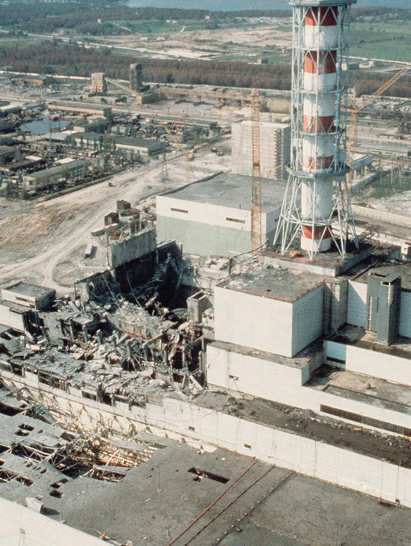In 1986, mechanical and operational failures during testing at the Chernobyl power plant in the USSR (now in the Ukraine) caused an uncontrolled nuclear chain reaction. The resulting fire destroyed much of the facility and severely damaged the core of the reactor, resulting in the release of large amounts of radiation that was spread over the surrounding area by the prevailing winds. The effects were devastating to the health of the population in the region and to the Soviet economy.
If, on the other hand, the neutron flow in a reactor is carefully regulated so that only enough heat is released to boil water, then the resulting steam can be used to produce electricity. Thus a nuclear reactor is similar in many respects to the conventional power plants discussed in Chapter 5 "Energy Changes in Chemical Reactions", which burn coal or natural gas to generate electricity; the only difference is the source of the heat that converts water to steam.
We begin our description of nuclear power plants with light-water reactors, which are used extensively to produce electricity in countries such as Japan, Israel, South Korea, Taiwan, and France—countries that lack large reserves of fossil fuels. The essential components of a light-water reactor are depicted in Figure 20.21 "A Light-Water Nuclear Fission Reactor for the Production of Electric Power". All existing nuclear power plants have similar components, although different designs use different fuels and operating conditions. Fuel rods containing a fissile isotope in a structurally stabilized form (such as uranium oxide pellets encased in a corrosion-resistant zirconium alloy) are suspended in a cooling bath that transfers the heat generated by the fission reaction to a secondary cooling system. The heat is used to generate steam for the production of electricity. In addition, control rods are used to absorb neutrons and thereby control the rate of the nuclear chain reaction. Control rods are made of a substance that efficiently absorbs neutrons, such as boron, cadmium, or, in nuclear submarines, hafnium. Pulling the control rods out increases the neutron flux, allowing the reactor to generate more heat, whereas inserting the rods completely stops the reaction, a process called “scramming the reactor.”
Figure 20.21 A Light-Water Nuclear Fission Reactor for the Production of Electric Power
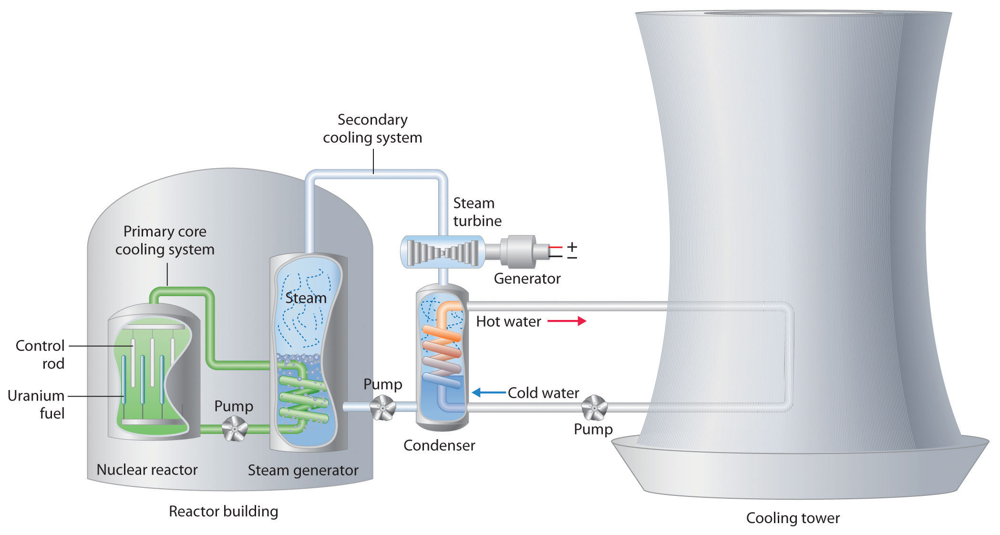The fuel rods are made of a corrosion-resistant alloy that encases the partially enriched uranium fuel; controlled fission of 235U in the fuel produces heat. Water surrounds the fuel rods and moderates the kinetic energy of the neutrons, slowing them to increase the probability that they will induce fission. Control rods that contain elements such as boron, cadmium, or hafnium, which are very effective at absorbing neutrons, are used to control the rate of the fission reaction. A heat exchanger is used to boil water in a secondary cooling system, creating steam to drive the turbine and produce electricity. The large hyperbolic cooling tower, which is the most visible portion of the facility, condenses the steam in the secondary cooling circuit; it is often located at some distance from the actual reactor.
Despite this apparent simplicity, many technical hurdles must be overcome for nuclear power to be an efficient and safe source of energy. Uranium contains only 0.72% uranium-235, which is the only naturally occurring fissile isotope of uranium. Because this abundance is not enough to support a chain reaction, the uranium fuel must be at least partially enriched in 235U, to a concentration of about 3%, for it to be able to sustain a chain reaction. At this level of enrichment, a nuclear explosion is impossible; far higher levels of enrichment (greater than or equal to 90%) are required for military applications such as nuclear weapons or the nuclear reactors in submarines. Enrichment is accomplished by converting uranium oxide to UF6, which is volatile and contains discrete UF6 molecules. Because 235UF6 and 238UF6 have different masses, they have different rates of effusion and diffusion, and they can be separated using a gas diffusion process, as described in Chapter 10 "Gases". Another difficulty is that neutrons produced by nuclear fission are too energetic to be absorbed by neighboring nuclei, and they escape from the material without inducing fission in nearby 235U nuclei. Consequently, a moderator must be used to slow the neutrons enough to allow them to be captured by other 235U nuclei. High-speed neutrons are scattered by substances such as water or graphite, which decreases their kinetic energy and increases the probability that they will react with another 235U nucleus. The moderator in a light-water reactor is the water that is used as the primary coolant. The system is highly pressurized to about 100 atm to keep the water from boiling at 100°C.
All nuclear reactors require a powerful cooling system to absorb the heat generated in the reactor core and create steam that is used to drive a turbine that generates electricity. In 1979, an accident occurred when the main water pumps used for cooling at the nuclear power plant at Three Mile Island in Pennsylvania stopped running, which prevented the steam generators from removing heat. Eventually, the zirconium casing of the fuel rods ruptured, resulting in a meltdown of about half of the reactor core. Although there was no loss of life and only a small release of radioactivity, the accident produced sweeping changes in nuclear power plant operations. The US Nuclear Regulatory Commission tightened its oversight to improve safety.
The main disadvantage of nuclear fission reactors is that the spent fuel, which contains too little of the fissile isotope for power generation, is much more radioactive than the unused fuel due to the presence of many daughter nuclei with shorter half-lives than 235U. The decay of these daughter isotopes generates so much heat that the spent fuel rods must be stored in water for as long as 5 yr before they can be handled. Even then, the radiation levels are so high that the rods must be stored for many, many more years to allow the daughter isotopes to decay to nonhazardous levels. How to store these spent fuel rods for hundreds of years is a pressing issue that has not yet been successfully resolved. As a result, some people are convinced that nuclear power is not a viable option for providing our future energy needs, although a number of other countries continue to rely on nuclear reactors for a large fraction of their energy.
Deuterium (2H) absorbs neutrons much less effectively than does hydrogen (1H), but it is about twice as effective at slowing neutrons. Consequently, a nuclear reactor that uses D2O instead of H2O as the moderator is so efficient that it can use unenriched uranium as fuel. Using a lower grade of uranium reduces operating costs and eliminates the need for plants that produce enriched uranium. Because of the expense of D2O, however, only countries like Canada, which has abundant supplies of hydroelectric power for generating D2O by electrolysis, have made a major investment in heavy-water reactors. (For more information on electrolysis, see Chapter 19 "Electrochemistry".)
A breeder reactor is a nuclear fission reactor that produces more fissionable fuel than it consumes. This does not violate the first law of thermodynamics because the fuel produced is not the same as the fuel consumed. Under heavy neutron bombardment, the nonfissile 238U isotope is converted to 239Pu, which can undergo fission:
Equation 20.40
The overall reaction is thus the conversion of nonfissile 238U to fissile 239Pu, which can be chemically isolated and used to fuel a new reactor. An analogous series of reactions converts nonfissile 232Th to 233U, which can also be used as a fuel for a nuclear reactor. Typically, about 8–10 yr are required for a breeder reactor to produce twice as much fissile material as it consumes, which is enough to fuel a replacement for the original reactor plus a new reactor. The products of the fission of 239Pu, however, have substantially longer half-lives than the fission products formed in light-water reactors.
Although nuclear fusion reactions, such as those in Equation 20.38 and Equation 20.39, are thermodynamically spontaneous, the positive charge on both nuclei results in a large electrostatic energy barrier to the reaction. (As you learned in Chapter 18 "Chemical Thermodynamics", thermodynamic spontaneity is unrelated to the reaction rate.) Extraordinarily high temperatures (about 1.0 × 108°C) are required to overcome electrostatic repulsions and initiate a fusion reaction. Even the most feasible such reaction, deuterium–tritium fusion (D–T fusion; Equation 20.39), requires a temperature of about 4.0 × 107°C. Achieving these temperatures and controlling the materials to be fused are extraordinarily difficult problems, as is extracting the energy released by the fusion reaction, because a commercial fusion reactor would require such high temperatures to be maintained for long periods of time. Several different technologies are currently being explored, including the use of intense magnetic fields to contain ions in the form of a dense, high-energy plasma at a temperature high enough to sustain fusion (part (a) in Figure 20.22 "Two Possible Designs for a Nuclear Fusion Reactor"). Another concept employs focused laser beams to heat and compress fuel pellets in controlled miniature fusion explosions (part (b) in Figure 20.22 "Two Possible Designs for a Nuclear Fusion Reactor").
Figure 20.22 Two Possible Designs for a Nuclear Fusion Reactor
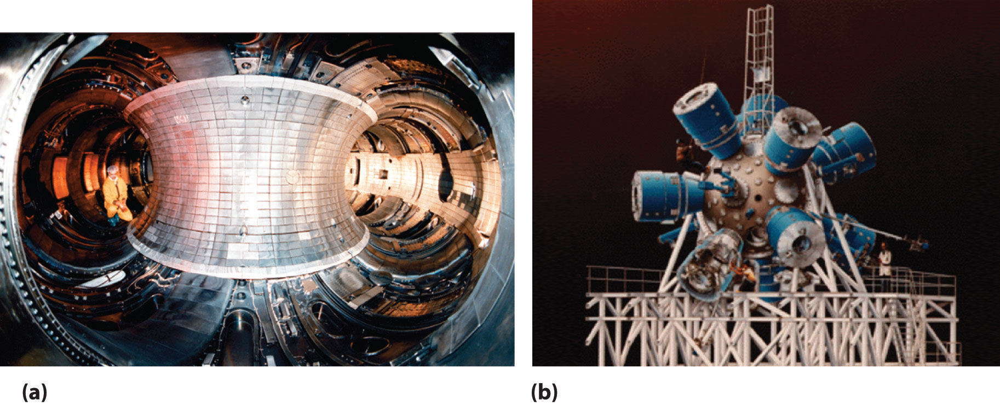The extraordinarily high temperatures needed to initiate a nuclear fusion reaction would immediately destroy a container made of any known material. (a) One way to avoid contact with the container walls is to use a high-energy plasma as the fuel. Because plasma is essentially a gas composed of ionized particles, it can be confined using a strong magnetic field shaped like a torus (a hollow donut). (b) Another approach to nuclear fusion is inertial confinement, which uses an icosahedral array of powerful lasers to heat and compress a tiny fuel pellet (a mixture of solid LiD and LiT) to induce fusion.
Nuclear reactions such as these are called thermonuclear reactionsA nuclear reaction that requires a great deal of thermal energy to initiate the reaction. because a great deal of thermal energy must be invested to initiate the reaction. The amount of energy released by the reaction, however, is several orders of magnitude greater than the energy needed to initiate it. In principle, a nuclear fusion reaction should thus result in a significant net production of energy. In addition, Earth’s oceans contain an essentially inexhaustible supply of both deuterium and tritium, which suggests that nuclear fusion could provide a limitless supply of energy. Unfortunately, however, the technical requirements for a successful nuclear fusion reaction are so great that net power generation by controlled fusion has yet to be achieved.
Nuclear radiation can damage biological molecules, thereby disrupting normal functions such as cell division (Table 20.4 "The Effects of a Single Radiation Dose on a 70 kg Human"). Because radiation is particularly destructive to rapidly dividing cells such as tumor cells and bacteria, it has been used medically to treat cancer since 1904, when radium-226 was first used to treat a cancerous tumor. Many radioisotopes are now available for medical use, and each has specific advantages for certain applications.
In modern radiation therapy, radiation is often delivered by a source planted inside the body. For example, tiny capsules containing an isotope such as 192Ir, coated with a thin layer of chemically inert platinum, are inserted into the middle of a tumor that cannot be removed surgically. The capsules are removed when the treatment is over. In some cases, physicians take advantage of the body’s own chemistry to deliver a radioisotope to the desired location. For example, the thyroid glands in the lower front of the neck are the only organs in the body that use iodine. Consequently, radioactive iodine is taken up almost exclusively by the thyroid (part (a) in Figure 20.23 "Medical Imaging and Treatment with Radioisotopes"). Thus when radioactive isotopes of iodine (125I or 131I) are injected into the blood of a patient suffering from thyroid cancer, the thyroid glands filter the radioisotope from the blood and concentrate it in the tissue to be destroyed. In cases where a tumor is surgically inaccessible (e.g., when it is located deep in the brain), an external radiation source such as a 60Co “gun” is used to aim a tightly focused beam of γ rays at it. Unfortunately, radiation therapy damages healthy tissue in addition to the target tumor and results in severe side effects, such as nausea, hair loss, and a weakened immune system. Although radiation therapy is generally not a pleasant experience, in many cases it is the only choice.
Figure 20.23 Medical Imaging and Treatment with Radioisotopes
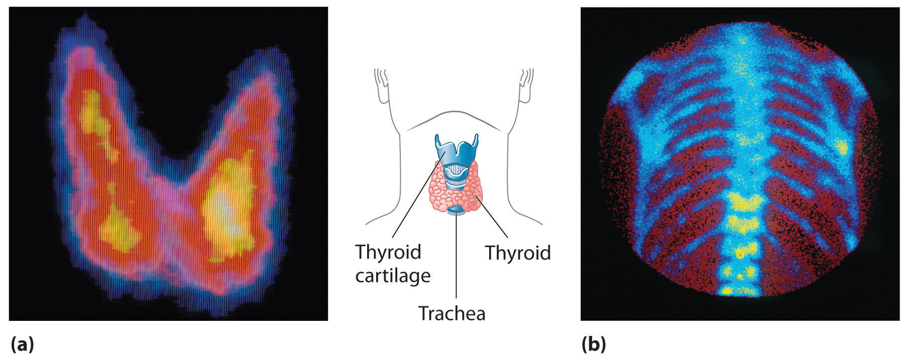(a) Radioactive iodine is used both to obtain images of the thyroid and to treat thyroid cancer. Injected iodine-123 or iodine-131 is selectively taken up by the thyroid gland, where it is incorporated into the thyroid hormone: thyroxine. Because iodine-131 emits low-energy β particles that are absorbed by the surrounding tissue, it can be used to destroy malignant tissue in the thyroid. In contrast, iodine-123 emits higher-energy γ rays that penetrate tissues readily, enabling it to image the thyroid gland, as shown here. (b) Some technetium compounds are selectively absorbed by cancerous cells within bones. The yellow spots show that a primary cancer has metastasized (spread) to the patient’s spine (lower center) and ribs (right center).
A second major medical use of radioisotopes is medical imaging, in which a radioisotope is temporarily localized in a particular tissue or organ, where its emissions provide a “map” of the tissue or the organ. Medical imaging uses radioisotopes that cause little or no tissue damage but are easily detected. One of the most important radioisotopes for medical imaging is 99mTc. Depending on the particular chemical form in which it is administered, technetium tends to localize in bones and soft tissues, such as the heart or the kidneys, which are almost invisible in conventional x-rays (part (b) in Figure 20.23 "Medical Imaging and Treatment with Radioisotopes"). Some properties of other radioisotopes used for medical imaging are listed in Table 20.5 "Radioisotopes Used in Medical Imaging and Treatment".
Table 20.5 Radioisotopes Used in Medical Imaging and Treatment
| Isotope | Half-Life | Tissue |
|---|---|---|
| 18F | 110 min | brain |
| 24Na | 15 h | circulatory system |
| 32P | 14 days | eyes, liver, and tumors |
| 59Fe | 45 days | blood and spleen |
| 60Co | 5.3 yr | external radiotherapy |
| 99mTc | 6 h | heart, thyroid, liver, kidney, lungs, and skeleton |
| 125I | 59.4 days | thyroid, prostate, and brain |
| 131I | 8 days | thyroid |
| 133Xe | 5 days | lungs |
| 201Tl | 3 days | heart |
Because γ rays produced by isotopes such as 131I and 99mTc are emitted randomly in all directions, it is impossible to achieve high levels of resolution in images that use such isotopes. However, remarkably detailed three-dimensional images can be obtained using an imaging technique called positron emission tomography (PET). The technique uses radioisotopes that decay by positron emission, and the resulting positron is annihilated when it collides with an electron in the surrounding matter. (For more information on positron emission, see Section 20.2 "Nuclear Reactions".) In the annihilation process, both particles are converted to energy in the form of two γ rays that are emitted simultaneously and at 180° to each other:
Equation 20.41
With PET, biological molecules that have been “tagged” with a positron-emitting isotope such as 18F or 11C can be used to probe the functions of organs such as the brain.
Another major health-related use of ionizing radiation is the irradiation of food, an effective way to kill bacteria such as Salmonella in chicken and eggs and potentially lethal strains of Escherichia coli in beef. Collectively, such organisms cause almost 3 million cases of food poisoning annually in the United States, resulting in hundreds of deaths. Figure 20.24 "The Preservation of Strawberries with Ionizing Radiation" shows how irradiation dramatically extends the storage life of foods such as strawberries. Although US health authorities have given only limited approval of this technique, the growing number of illnesses caused by antibiotic-resistant bacteria is increasing the pressure to expand the scope of food irradiation.
Figure 20.24 The Preservation of Strawberries with Ionizing Radiation
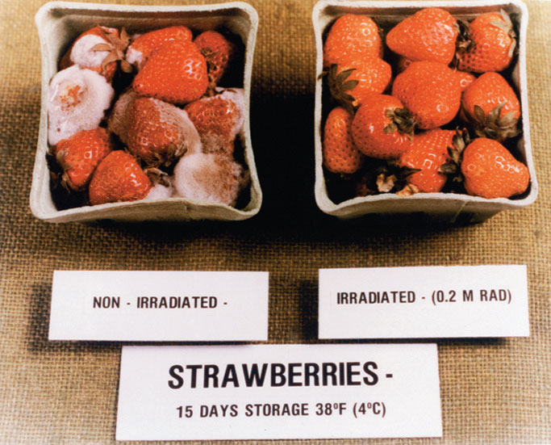Fruits such as strawberries can be irradiated by high-energy γ rays to kill bacteria and prolong their storage life. The nonirradiated strawberries on the left are completely spoiled after 15 days in storage, but the irradiated strawberries on the right show no visible signs of spoilage under the same conditions.
One of the more unusual effects of radioisotopes is in dentistry. Because dental enamels contain a mineral called feldspar (KAlSi3O8, which is also found in granite rocks), teeth contain a small amount of naturally occurring radioactive 40K. The radiation caused by the decay of 40K results in the emission of light (fluorescence), which gives the highly desired “pearly white” appearance associated with healthy teeth.
In a sign of how important nuclear medicine has become in diagnosing and treating illnesses, the medical community has become alarmed at the global shortage of 99Tc, a radioisotope used in more than 30 million procedures a year worldwide. Two reactors that produce 60% of the world’s radioactive 99Mo, which decays to 99Tc, are operating beyond their intended life expectancies. Moreover, because most of the reactors producing 99Mo use weapons-grade uranium (235U), which decays to 99Mo during fission, governments are working to phase out civilian uses of technology to produce 99Mo because of concerns that the technology can be used to produce nuclear weapons. Engineers are currently focused on how to make key medical isotopes with other alternatives that don’t require fission. One promising option is by removing a neutron from 100Mo, a stable isotope that makes up about 10% of natural molybdenum, transmuting it to 99Mo.
In addition to the medical uses of radioisotopes, radioisotopes have literally hundreds of other uses. For example, smoke detectors contain a tiny amount of 241Am, which ionizes the air in the detector so an electric current can flow through it. Smoke particles reduce the number of ionized particles and decrease the electric current, which triggers an alarm. Another application is the “go-devil” used to detect leaks in long pipelines. It is a packaged radiation detector that is inserted into a pipeline and propelled through the pipe by the flowing liquid. Sources of 60Co are attached to the pipe at regular intervals; as the detector travels along the pipeline, it sends a radio signal each time it passes a source. When a massive leak causes the go-devil to stop, the repair crews know immediately which section of the pipeline is damaged. Finally, radioactive substances are used in gauges that measure and control the thickness of sheets and films. As shown in Figure 20.25 "Using Radiation to Control the Thickness of a Material", thickness gauges rely on the absorption of either β particles (by paper, plastic, and very thin metal foils) or γ rays (for thicker metal sheets); the amount of radiation absorbed can be measured accurately and is directly proportional to the thickness of the material.
Figure 20.25 Using Radiation to Control the Thickness of a Material
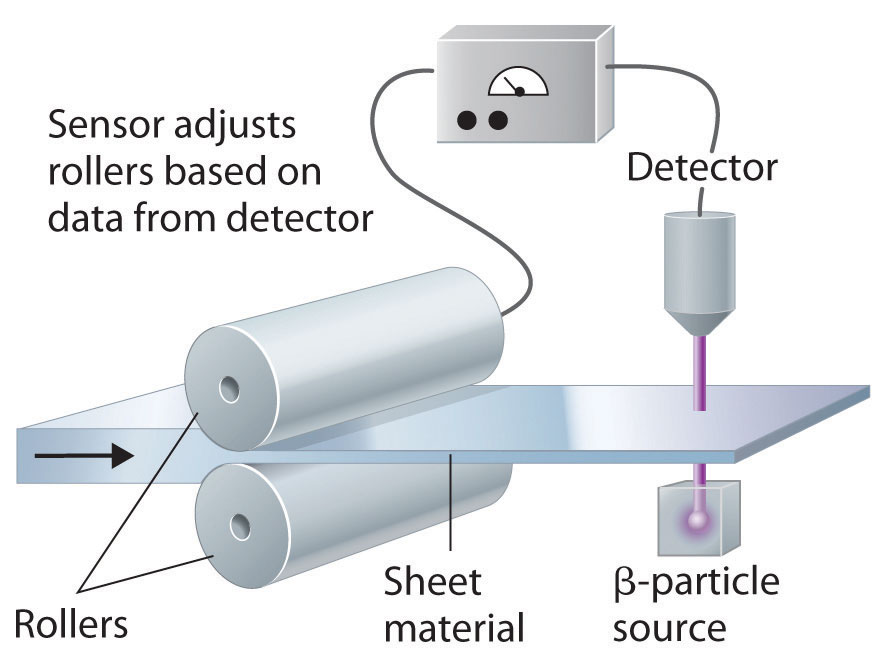Because the amount of radiation absorbed by a material is proportional to its thickness, radiation can be used to control the thickness of plastic film, tin foil, or paper. As shown, a beta emitter is placed on one side of the material being produced and a detector on the other. An increase in the amount of radiation that reaches the detector indicates a decrease in the thickness of the material and vice versa. The output of the detector can thus be used to control the thickness of the material.
In nuclear power plants, nuclear reactions generate electricity. Light-water reactors use enriched uranium as a fuel. They include fuel rods, a moderator, control rods, and a powerful cooling system to absorb the heat generated in the reactor core. Heavy-water reactors use unenriched uranium as a fuel because they use D2O as the moderator, which scatters and slows neutrons much more effectively than H2O. A breeder reactor produces more fissionable fuel than it consumes. A nuclear fusion reactor requires very high temperatures. Fusion reactions are thermonuclear reactions because they require high temperatures for initiation. Radioisotopes are used in both radiation therapy and medical imaging.
In nuclear reactors, two different but interrelated factors must be controlled to prevent a mishap that could cause the release of unwanted radiation. How are these factors controlled?
What are the three principal components of a nuclear reactor? What is the function of each component?
What is meant by the term enrichment with regard to uranium for fission reactors? Why does the fuel in a conventional nuclear reactor have to be “enriched”?
The plot in a recent spy/action movie involved the threat of introducing stolen “weapons-grade” uranium, which consists of 93.3% 235U, into a fission reactor that normally uses a fuel containing about 3% 235U. Explain why this could be catastrophic.
Compare a heavy-water reactor with a light-water reactor. Why are heavy-water reactors less widely used? How do these two reactor designs compare with a breeder reactor?
Conventional light-water fission reactors require enriched fuel. An alternative reactor is the so-called heavy-water reactor. The components of the two different reactors are the same except that instead of using water (H2O), the moderator in a heavy-water reactor is D2O, known as “heavy water.” Because D2O is more efficient than H2O at slowing neutrons, heavy-water reactors do not require fuel enrichment to support fission. Why is D2O more effective at slowing neutrons, and why does this allow unenriched fuels to be used?
Isotopes emit γ rays in random directions. What difficulties do these emissions present for medical imaging? How are these difficulties overcome?
If you needed to measure the thickness of 1.0 mm plastic sheets, what type of radiation would you use? Would the radiation source be the same if you were measuring steel of a similar thickness? What is your rationale? Would you want an isotope with a long or short half-life for this device?
Neutron flow is regulated by using control rods that absorb neutrons, whereas the speed of the neutrons produced by fission is controlled by using a moderator that slows the neutrons enough to allow them to react with nearby fissile nuclei.
It is difficult to pinpoint the exact location of the nucleus that decayed. In contrast, the collision of a positron with an electron causes both particles to be annihilated, and in the process, two gamma rays are emitted in opposite directions, which makes it possible to identify precisely where a positron emitter is located and to create detailed images of tissues.
Palladium-103, which decays via electron capture and emits x-rays with an energy of 3.97 × 10−2 MeV, is often used to treat prostate cancer. Small pellets of the radioactive metal are embedded in the prostate gland. This provides a localized source of radiation to a very small area, even though the tissue absorbs only about 1% of the x-rays. Due to its short half-life, all of the palladium will decay to a stable isotope in less than a year. If a doctor embeds 50 pellets containing 2.50 mg of 103Pd in the prostate gland of a 73.9 kg patient, what is the patient’s radiation exposure over the course of a year?
Several medical treatments use cobalt-60m, which is formed by bombarding cobalt with neutrons to produce a highly radioactive gamma emitter that undergoes 4.23 × 1016 emissions/(s·kg) of pure cobalt-60. The energy of the gamma emission is 5.86 × 10−2 MeV. Write the balanced nuclear equation for the formation of this isotope. Is this a transmutation reaction? If a 55.3 kg patient received a 0.50 s exposure to a 0.30 kg cobalt-60 source, what would the exposure be in rads? Predict the potential side effects of this dose.
The relative abundances of the elements in the known universe vary by more than 12 orders of magnitude. For the most part, these differences in abundance cannot be explained by differences in nuclear stability. Although the 56Fe nucleus is the most stable nucleus known, the most abundant element in the known universe is not iron, but hydrogen (1H), which accounts for about 90% of all atoms. In fact, 1H is the raw material from which all other elements are formed.
In this section, we explain why 1H and 2He together account for at least 99% of all the atoms in the known universe. We also describe the nuclear reactions that take place in stars, which transform one nucleus into another and create all the naturally occurring elements.
The relative abundances of the elements in the known universe and on Earth relative to silicon are shown in Figure 20.26 "The Relative Abundances of the Elements in the Universe and on Earth". The data are estimates based on the characteristic emission spectra of the elements in stars, the absorption spectra of matter in clouds of interstellar dust, and the approximate composition of Earth as measured by geologists. The data in Figure 20.26 "The Relative Abundances of the Elements in the Universe and on Earth" illustrate two important points. First, except for hydrogen, the most abundant elements have even atomic numbers. Not only is this consistent with the trends in nuclear stability discussed in Section 20.1 "The Components of the Nucleus", but it also suggests that heavier elements are formed by combining helium nuclei (Z = 2). Second, the relative abundances of the elements in the known universe and on Earth are often very different, as indicated by the data in Table 20.6 "Relative Abundances of Elements on Earth and in the Known Universe" for some common elements. Some of these differences are easily explained. For example, nonmetals such as H, He, C, N, O, Ne, and Kr are much less abundant relative to silicon on Earth than they are in the rest of the universe. These elements are either noble gases (He, Ne, and Kr) or elements that form volatile hydrides, such as NH3, CH4, and H2O. Because Earth’s gravity is not strong enough to hold such light substances in the atmosphere, these elements have been slowly diffusing into outer space ever since our planet was formed. Argon is an exception; it is relatively abundant on Earth compared with the other noble gases because it is continuously produced in rocks by the radioactive decay of isotopes such as 40K. In contrast, many metals, such as Al, Na, Fe, Ca, Mg, K, and Ti, are relatively abundant on Earth because they form nonvolatile compounds, such as oxides, that cannot escape into space. Other metals, however, are much less abundant on Earth than in the universe; some examples are Ru and Ir. You may recall from Chapter 1 "Introduction to Chemistry" that the anomalously high iridium content of a 66-million-year-old rock layer was a key finding in the development of the asteroid-impact theory for the extinction of the dinosaurs. This section explains some of the reasons for the great differences in abundances of the metallic elements.
Figure 20.26 The Relative Abundances of the Elements in the Universe and on Earth

In this logarithmic plot, the relative abundances of the elements relative to that of silicon (arbitrarily set equal to 1) in the universe (green bars) and on Earth (purple bars) are shown as a function of atomic number. Elements with even atomic numbers are generally more abundant in the universe than elements with odd atomic numbers. Also, the relative abundances of many elements in the universe are very different from their relative abundances on Earth.
Table 20.6 Relative Abundances of Elements on Earth and in the Known Universe
| Terrestrial/Universal Element | Abundance Ratio |
|---|---|
| H | 0.0020 |
| He | 2.4 × 10−8 |
| C | 0.36 |
| N | 0.02 |
| O | 46 |
| Ne | 1.9 × 10−6 |
| Na | 1200 |
| Mg | 48 |
| Al | 1600 |
| Si | 390 |
| S | 0.84 |
| K | 5000 |
| Ca | 710 |
| Ti | 2200 |
| Fe | 57 |
All the elements originally present on Earth (and on other planets) were synthesized from hydrogen and helium nuclei in the interiors of stars that have long since exploded and disappeared. Six of the most abundant elements in the universe (C, O, Ne, Mg, Si, and Fe) have nuclei that are integral multiples of the helium-4 nucleus, which suggests that helium-4 is the primary building block for heavier nuclei.
Elements are synthesized in discrete stages during the lifetime of a star, and some steps occur only in the most massive stars known (Figure 20.27 "Nuclear Reactions during the Life Cycle of a Massive Star"). Initially, all stars are formed by the aggregation of interstellar “dust,” which is mostly hydrogen. As the cloud of dust slowly contracts due to gravitational attraction, its density eventually reaches about 100 g/cm3, and the temperature increases to about 1.5 × 107 K, forming a dense plasma of ionized hydrogen nuclei. At this point, self-sustaining nuclear reactions begin, and the star “ignites,” creating a yellow star like our sun.
Figure 20.27 Nuclear Reactions during the Life Cycle of a Massive Star

At each stage in the lifetime of a star, a different fuel is used for nuclear fusion, resulting in the formation of different elements. Fusion of hydrogen to give helium is the primary fusion reaction in young stars. As the star ages, helium accumulates and begins to “burn,” undergoing fusion to form heavier elements such as carbon and oxygen. As the adolescent star matures, significant amounts of iron and nickel are formed by fusion of the heavier elements formed previously. The heaviest elements are formed only during the final death throes of the star—the formation of a nova or supernova.
In the first stage of its life, the star is powered by a series of nuclear fusion reactions that convert hydrogen to helium:
Equation 20.42
The overall reaction is the conversion of four hydrogen nuclei to a helium-4 nucleus, which is accompanied by the release of two positrons, two γ rays, and a great deal of energy:
Equation 20.43
These reactions are responsible for most of the enormous amount of energy that is released as sunlight and solar heat. It takes several billion years, depending on the size of the star, to convert about 10% of the hydrogen to helium.
Once large amounts of helium-4 have been formed, they become concentrated in the core of the star, which slowly becomes denser and hotter. At a temperature of about 2 × 108 K, the helium-4 nuclei begin to fuse, producing beryllium-8:
Equation 20.44
Although beryllium-8 has both an even mass number and an even atomic number, the low neutron-to-proton ratio makes it very unstable, decomposing in only about 10−16 s. Nonetheless, this is long enough for it to react with a third helium-4 nucleus to form carbon-12, which is very stable. Sequential reactions of carbon-12 with helium-4 produce the elements with even numbers of protons and neutrons up to magnesium-24:
Equation 20.45
So much energy is released by these reactions that it causes the surrounding mass of hydrogen to expand, producing a red giant that is about 100 times larger than the original yellow star.
As the star expands, heavier nuclei accumulate in its core, which contracts further to a density of about 50,000 g/cm3, so the core becomes even hotter. At a temperature of about 7 × 108 K, carbon and oxygen nuclei undergo nuclear fusion reactions to produce sodium and silicon nuclei:
Equation 20.46
Equation 20.47
At these temperatures, carbon-12 reacts with helium-4 to initiate a series of reactions that produce more oxygen-16, neon-20, magnesium-24, and silicon-28, as well as heavier nuclides such as sulfur-32, argon-36, and calcium-40:
Equation 20.48
The energy released by these reactions causes a further expansion of the star to form a red supergiant, and the core temperature increases steadily. At a temperature of about 3 × 109 K, the nuclei that have been formed exchange protons and neutrons freely. This equilibration process forms heavier elements up to iron-56 and nickel-58, which have the most stable nuclei known.
None of the processes described so far produces nuclei with Z > 28. All naturally occurring elements heavier than nickel are formed in the rare but spectacular cataclysmic explosions called supernovas (Figure 20.27 "Nuclear Reactions during the Life Cycle of a Massive Star"). When the fuel in the core of a very massive star has been consumed, its gravity causes it to collapse in about 1 s. As the core is compressed, the iron and nickel nuclei within it disintegrate to protons and neutrons, and many of the protons capture electrons to form neutrons. The resulting neutron star is a dark object that is so dense that atoms no longer exist. Simultaneously, the energy released by the collapse of the core causes the supernova to explode in what is arguably the single most violent event in the universe. The force of the explosion blows most of the star’s matter into space, creating a gigantic and rapidly expanding dust cloud, or nebula (Figure 20.28 "A Supernova"). During the extraordinarily short duration of this event, the concentration of neutrons is so great that multiple neutron-capture events occur, leading to the production of the heaviest elements and many of the less stable nuclides. Under these conditions, for example, an iron-56 nucleus can absorb as many as 64 neutrons, briefly forming an extraordinarily unstable iron isotope that can then undergo multiple rapid β-decay processes to produce tin-120:
Equation 20.49
Figure 20.28 A Supernova

A view of the remains of Supernova 1987A, located in the Large Magellanic Cloud, showing the circular halo of expanding debris produced by the explosion. Multiple neutron-capture events occur during a supernova explosion, forming both the heaviest elements and many of the less stable nuclides.
Although a supernova occurs only every few hundred years in a galaxy such as the Milky Way, these rare explosions provide the only conditions under which elements heavier than nickel can be formed. The force of the explosions distributes these elements throughout the galaxy surrounding the supernova, and eventually they are captured in the dust that condenses to form new stars. Based on its elemental composition, our sun is thought to be a second- or third-generation star. It contains a considerable amount of cosmic debris from the explosion of supernovas in the remote past.
The reaction of two carbon-12 nuclei in a carbon-burning star can produce elements other than sodium. Write a balanced nuclear equation for the formation of
Given: reactant and product nuclides
Asked for: balanced nuclear equation
Strategy:
Use conservation of mass and charge to determine the type of nuclear reaction that will convert the reactant to the indicated product. Write the balanced nuclear equation for the reaction.
Solution:
Exercise
How many neutrons must an iron-56 nucleus absorb during a supernova explosion to produce an arsenic-75 nucleus? Write a balanced nuclear equation for the reaction.
Answer: 19 neutrons;
By far the most abundant element in the universe is hydrogen. The fusion of hydrogen nuclei to form helium nuclei is the major process that fuels young stars such as the sun. Elements heavier than helium are formed from hydrogen and helium in the interiors of stars. Successive fusion reactions of helium nuclei at higher temperatures create elements with even numbers of protons and neutrons up to magnesium and then up to calcium. Eventually, the elements up to iron-56 and nickel-58 are formed by exchange processes at even higher temperatures. Heavier elements can only be made by a process that involves multiple neutron-capture events, which can occur only during the explosion of a supernova.
Why do scientists believe that hydrogen is the building block of all other elements? Why do scientists believe that helium-4 is the building block of the heavier elements?
How does a star produce such enormous amounts of heat and light? How are elements heavier than Ni formed?
Propose an explanation for the observation that elements with even atomic numbers are more abundant than elements with odd atomic numbers.
During the lifetime of a star, different reactions that form different elements are used to power the fusion furnace that keeps a star “lit.” Explain the different reactions that dominate in the different stages of a star’s life cycle and their effect on the temperature of the star.
A line in a popular song from the 1960s by Joni Mitchell stated, “We are stardust….” Does this statement have any merit or is it just poetic? Justify your answer.
If the laws of physics were different and the primary element in the universe were boron-11 (Z = 5), what would be the next four most abundant elements? Propose nuclear reactions for their formation.
The raw material for all elements with Z > 2 is helium (Z = 2), and fusion of helium nuclei will always produce nuclei with an even number of protons.
Write a balanced nuclear reaction for the formation of each isotope.
At the end of a star’s life cycle, it can collapse, resulting in a supernova explosion that leads to the formation of heavy elements by multiple neutron-capture events. Write a balanced nuclear reaction for the formation of each isotope during such an explosion.
When a star reaches middle age, helium-4 is converted to short-lived beryllium-8 (mass = 8.00530510 amu), which reacts with another helium-4 to produce carbon-12. How much energy is released in each reaction (in megaelectronvolts)? How many atoms of helium must be “burned” in this process to produce the same amount of energy obtained from the fusion of 1 mol of hydrogen atoms to give deuterium?
Until the 1940s, uranium glazes were popular on ceramic dishware. One brand, Fiestaware, had bright orange glazes that could contain up to 20% uranium by mass. Although this practice is less common today due to the negative association of radiation, it is still possible to buy Depression-era glassware that is quite radioactive. Aqueous solutions in contact with this “hot” glassware can reach uranium concentrations up to 10 ppm by mass. If 1.0 g of uranium undergoes 1.11 × 107 decays/s, each to an α particle with an energy of 4.03 MeV, what would be your exposure in rem and rad if you drank 1.0 L of water that had been sitting for an extended time in a Fiestaware pitcher? Assume that the water and contaminants are excreted only after 18 h and that you weigh 70.0 kg.
Neutrography is a technique used to take the picture of an object using a beam of neutrons. How does the penetrating power of a neutron compare with alpha, beta, and gamma radiation? Do you expect similar penetration for protons? How would the biological damage of each particle compare with the other types of radiation? (Recall that a neutron’s mass is approximately 2000 times the mass of an electron.)
Spent fuel elements in a nuclear reactor contain radioactive fission products in addition to heavy metals. The conversion of nuclear fuel in a reactor is shown here:

Neglecting the fission products, write balanced nuclear reactions for the conversion of the original fuel to each product.
The first atomic bomb used 235U as a fissile material, but there were immense difficulties in obtaining sufficient quantities of pure 235U. A second fissile element, plutonium, was discovered in 1940, and it rapidly became important as a nuclear fuel. This element was produced by irradiating 238U with neutrons in a nuclear reactor. Complete the series that produced plutonium, all isotopes of which are fissile:
Boron neutron capture therapy is a potential treatment for many diseases. As the name implies, when boron-10, one of the naturally occurring isotopes of boron, is bombarded with neutrons, it absorbs a neutron and emits an α particle. Write a balanced nuclear reaction for this reaction. One advantage of this process is that neutrons cause little damage on their own, but when they are absorbed by boron-10, they can cause localized emission of alpha radiation. Comment on the utility of this treatment and its potential difficulties.
An airline pilot typically flies approximately 80 h per month. If 75% of that time is spent at an altitude of about 30,000 ft, how much radiation is that pilot receiving in one month? over a 30 yr career? Is the pilot receiving toxic doses of radiation?
At a breeder reactor plant, a 72 kg employee accidentally inhaled 2.8 mg of 239Pu dust. The isotope decays by alpha decay and has a half-life of 24,100 yr. The energy of the emitted α particles is 5.2 MeV, and the dust stays in the employee’s body for 18 h.
For many years, the standard source for radiation therapy in the treatment of cancer was radioactive 60Co, which undergoes beta decay to 60Ni and emits two γ rays, each with an energy of 1.2 MeV. Show the sequence of nuclear reactions. If the half-life for beta decay is 5.27 yr, how many 60Co nuclei are present in a typical source undergoing 6000 dps that is used by hospitals? The mass of 60Co is 59.93 amu.
It is possible to use radioactive materials as heat sources to produce electricity. These radioisotope thermoelectric generators (RTGs) have been used in spacecraft and many other applications. Certain Cold War–era Russian-made RTGs used a 5.0 kg strontium-90 source. One mole of strontium-90 releases β particles with an energy of 0.545 MeV and undergoes 2.7 × 1013 decays/s. How many watts of power are available from this RTG (1 watt = 1 J/s)?
Potassium consists of three isotopes (potassium-39, potassium-40, and potassium-41). Potassium-40 is the least abundant, and it is radioactive, decaying to argon-40, a stable, nonradioactive isotope, by the emission of a β particle with a half-life of precisely 1.25 × 109 yr. Thus the ratio of potassium-40 to argon-40 in any potassium-40–containing material can be used to date the sample. In 1952, fragments of an early hominid, Meganthropus, were discovered near Modjokerto in Java. The bone fragments were lying on volcanic rock that was believed to be the same age as the bones. Potassium–argon dating on samples of the volcanic material showed that the argon-40-to-potassium-40 molar ratio was 0.00281:1. How old were the rock fragments? Could the bones also be the same age? Could radiocarbon dating have been used to date the fragments?
6.6 × 10−3 rad; 0.13 rem
130 W